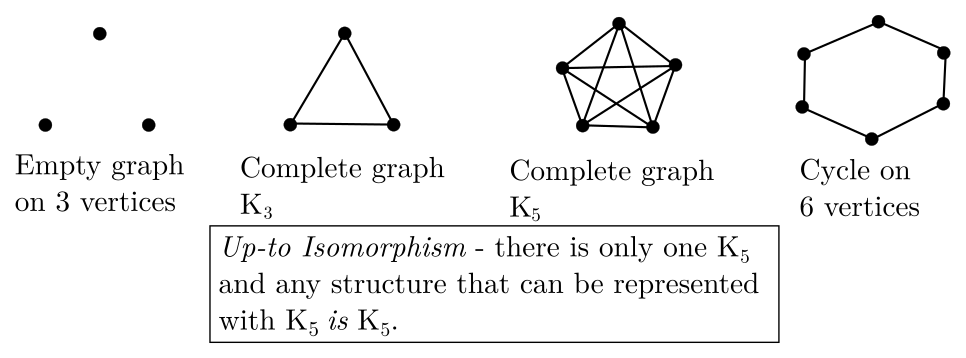
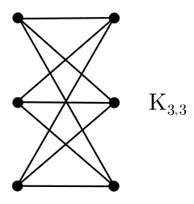
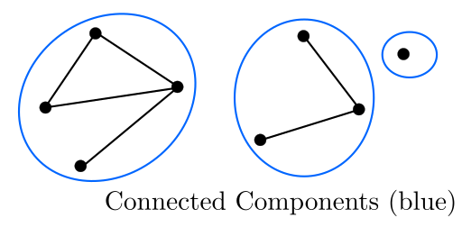
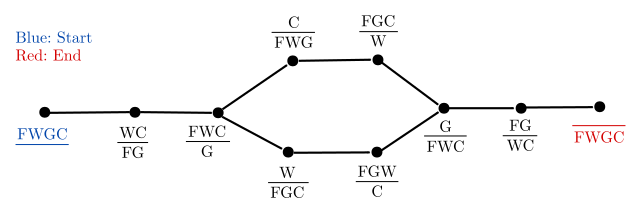
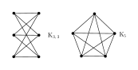
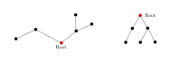
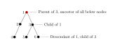
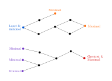

By Yijun Hu. These notes are copied over from my main website, and are mostly kept in sync. Main page here.
Sets, denoted like \( S = \{a, b, c, ...\} \), contain unique elements. \[ \mathbb{N} \subseteq \mathbb{Z} \subseteq \mathbb{Q} \subseteq \mathbb{R} \]
The number of elements (cardinality) of a set \(A\) denoted \(|A| = n , n \in \mathbb{N}\).
Recall the such that notation (: or |). Recall the empty set \(\{\}, \varnothing\). If \(|D| = 1\), D is a singleton set.
Suppose \(A = \{a, b, c\}\). Then we denote \( A^2 = \{aa, ab, ac, ba, bb, bc, ca, cb, cc\} \), and \(A^n\) is the set of all ordered sequences of length \(n\) of elements in A. Ex. \(\mathbb{Z}^2\) is the set of ordered integer pairs (i.e. integer coordinates). Tuple brackets are usually kept on unless no ambiguity can be had without them on.
Let \( A = \{2, \{3, 4, 5\}, 6, \varnothing \} \). \( |A| = 4 \). We can say that \( A \not \subseteq B \equiv \exists x \in A : x \not \in B \). We also have \( A \varsubsetneq B \) which is an alternate syntax of \( A \subset B \), and means \( A \subseteq B \land A \neq B \). The empty set \( \varnothing \subseteq B, \forall B \).
Set ranges, let \( C = \{x \in \mathbb{R} : x \leq 5\} \) can also be denoted as \( C = (-\infty, 5] \) or the same using a semicolon vs a comma.
We can define the set operations as follows:
We can define symmetric difference as \( A \vartriangle B = (A \setminus B) \cup (B \setminus A) \).
Statement. \( (A \setminus B) \cup (B \setminus A) \) is the same as \( (A \cup B) \setminus (A \cap B) \).
Proof. We want to show that \( (A \setminus B) \cup (B \setminus A) \Longleftrightarrow (A \cup B) \setminus (A \cap B) \)
For the forward proof, let us take an arbitrary \( x \in (A \setminus B) \cup (B \setminus A) \). We have two cases:
\begin{align}
\textrm{(1) } x \in A \setminus B &\implies x \in A \\
&\implies x \in A \cup B. \\
x \in A \setminus B &\implies x \not \in B \\
&\implies x \not \in A \cap B \\
&\implies x \in (A \cup B) \setminus (A \cap B). \triangleright \\
\textrm{(2) } x \in B \setminus A &\implies x \in B \\
&\implies x \in A \cup B. \\
x \in B \setminus A &\implies x \not \in A \\
&\implies x \not \in A \cap B \\
&\implies x \in (A \cup B) \setminus (A \cap B). \triangleright \\
\end{align}
We have now proved the forward condition. For the backward proof, let us take an arbitrary element \( x \in (A \cup B) \setminus (A \cap B) \).
\begin{align}
&x \in A \cup B \\
&x \in A \cup B \implies x \in A \lor x \in B \\
&\textrm{if } x \in A \implies x \not \in B \textrm{ else contradiction as } x \in A \cap B \implies x \not \in (A \cup B) \setminus (A \cap B)\\
&\therefore x \in A \setminus B \\
&\textrm{if } x \in B \implies x \not \in A \textrm{ else similar contradiction} \\
&\therefore x \in B \setminus A\\
&\therefore x \in (A \setminus B) \cup (B \setminus A).
\end{align}
$$\tag*{$\Box$}$$
We can trivially define the following:
For negation, we need to do some defining. Set minus is not negation, since we need 2 sets for set minus. So suppose then we have a universal set \( S \). For any set \( A \subseteq S \), the complement of A relative to S is the difference, \( \bar{A} = S \setminus A \). Thus, \( \bar{\bar{A}} = A \).
We also can define De Morgan's law, as
\[ \overline{A \cap B} = \bar{A} \cup \bar{B} \textrm{ and } \overline{A \cup B} = \bar{A} \cap \bar{B} \]
In case the overlines don't show up, that is the complement of A intersect B equals the compliment of A union the compliment of B. And similarly with the \(\cup, \cap\) reversed.
We can then define the following, \begin{align*} &A \cap S = A \ &A \cup \varnothing = A \\ &A \cap \varnothing \ &A \cup S = S \\ &A \cap \bar{A} = \varnothing \ &A \cup \bar{A} = S \\ \end{align*} \[A \cap (A \cup B) = A = A \cup (A \cap B)\] The last of which is a theorem and deducible.
We have notation for when we want to perform an operation over many sets. This is similar to summation notation. \[ \bigcup^{n}_{i=1} A_i \] indicates that we want to perform set union on all sets A of index i to n. Similarly, for set intersection, we have \[ \bigcap^{n}_{i=1} A_i \]
Example 1. Let a set \( A_i = \{x \in \mathbb{Z} : x \geq i, i \in \mathbb{N}\}\) for some index i. Then, we can play around with some operations using these large operators. \begin{align*} &\bigcup_{i=1}^{\infty} A_i = A_1;\ &\bigcap_{i=1}^{\infty} A_i = \varnothing; \ &\bigcap_{i=1}^{n} A_i = A_n; \end{align*} More generally, for a set of indices \( I \), we can write \begin{align} \bigcup_{i \in I} A_i &= \{x : x \in A_i \textrm{ for some } i \in I\} \\ \bigcap_{i \in I} A_i &= \{x : x \in A_i \textrm{ for all } i \in I\} \\ \end{align} Note that the first is how \( \exists \) works, whilst the second is how \( \forall \) works.
Given a set S the power set is the set of all subsets of S.
Let \( S_1 = \varnothing \), then \( 2^{S_1} = \{\varnothing\} \)
Let \( S_2 = \{a, b\} \), then \( 2^{S_2} = \{\varnothing, \{a\}, \{b\}, \{a, b\}\} \)
And so on. All subsets of a set are elements of its power set.
A finite set gives a finite power set. If the cardinality of a set \( |S| = n \), the caridnality of its power set \( |2^{S}| = 2^{|S|} = 2^n \). This also shows why the power set notation is as thus.
Recall: for a set \( A, A^2 = \{(a_1, a_2) : a_i \in A, a_2 \in A\} \). Etc. for \( A^n \). The cartesian product for two sets, \( A \times B \), is defined similarly, as \( \{(a, b) : a \in A, b \in B\} \).
What happens when we take a cartesian product \( A \times \varnothing \)? Well, since \( \varnothing \) has 0 elements, if we look at the defnition the resulting set must have 0 elements, as we cannot have any ordered pairs, thus \( A \times \varnothing = \varnothing = \varnothing \times A \).
On associativity and commutativity, cartesian product is not commutative, as by switching around the sets we switch around the ordered pairs. On associativity, suppose \( (A \times B) \times C \). \begin{align} (A \times B) \times C &= \{(x, y) : x \in A \times B, y \in C\} \\ &= \{(x, y) : [x = (a, b):a \in A, b \in B], y \in C\} \\ &= \{((a,b),c): a \in A, b \in B, c \in C\} \\ \textrm{However } A \times (B \times C) &= \{(a,(b,c)): a \in A, b \in B, c \in C\} \textrm{ which is different. } \end{align} So cartesian product is not associative, either.
We can define \( A \times B \times C = \{(a,b,c) : a \in A, b \in B, c \in C\} \), and extrapolate for further product chains.
Note: Dimitry's philosophical ramblings for this topic are not included.
Propositions allow us to express statements which can be true or false. "Washington DC is the capital of the US" is a true proposition, whilst "2+2=5" is a false one.
Sentences like "What time is it?", "Read this carefully", are not propositions. "\(x+2=5\)" is not a proposition, but could be iff x was fixed beforehand.
Atomic propositions are propositions that cannot be broken down further, they are usually represented by a letter, \(p, q\).
Propositions can be compounded with logical operators \(\lnot, \land, \lor\). These are Negation, Conjunction, Disjunction respectively. Conjunction, \(P \land Q\) can also be written \(PQ\).
An implication, "if P then Q " or "P implies Q " is denoted \(P \implies Q\), and equals \(\lnot P \lor Q\).
For a set of boolean values \(B - \{T, F\}\), a boolean function is a function such that \(f : B^n \longrightarrow B\)
Example 1. Simple example for \(n=2\), let a function \(h_2 (x, y)\) be over this boolean set. We can construct a truth table for this function.
\begin{array} {|r|r|}\hline x & y & h_2 (x,y) \\ \hline F & F & F \\ \hline F & T & T \\ \hline T & F & T \\ \hline T & T & F \\ \hline \end{array}
In this case, the function is exclusive or, \(x \oplus y\).
Example 2. Construct the truth table for \((p \implies q) \land (\lnot p \implies r)\)
Answer 2. Note that \(p \implies q\) is \(\lnot p \land q\), we can do this incrementally. Let big Q be the output. \begin{array} {|r|r|}\hline p & q & r & p \implies q & \lnot p & \lnot p \implies r & Q \\ \hline F & F & F & T & T & F & F \\ \hline F & F & T & T & T & T & T \\ \hline F & T & F & T & T & F & F \\ \hline F & T & T & T & T & T & T \\ \hline T & F & F & F & F & T & F \\ \hline T & F & T & F & F & T & F \\ \hline T & T & F & T & F & T & T \\ \hline T & T & T & T & F & T & T \\ \hline \end{array}
Since \(\lnot p \lor q \equiv p \implies q\) (the proof of this is trivial), the propositions \(\lnot p \lor q\) and \(p \implies q\) are logically equivalent if the proposition \( \lnot p \lor q \Longleftrightarrow p \implies q\ \) (also written using \(\longleftrightarrow\)) is a tautology.
\(\Longleftrightarrow\) is the logical equivalence connector, which can be described with the following truth table: \begin{array} {|r|r|}\hline x & y & x \Longleftrightarrow y \\ \hline F & F & T \\ \hline F & T & F \\ \hline T & F & F \\ \hline T & T & T \\ \hline \end{array}
A tautology is a proposition that is true regardless of the values of its atomic propositions.
Proof. We can prove the absorption law (1) by using the distributive (2), annihalation (3), and identity (4) laws. \[x \lor (x \land y) \] \begin{align} \textrm{by (4) } &\implies (x \land T) \lor (x \land y) \\ \textrm{by (2) } &\implies x \land (T \lor y) \\ \textrm{by (3) } &\implies x \land T \\ \textrm{by (3) } &\implies x \\ \end{align} $$\tag*{$\Box$}$$
Logical AND can be \(\land, \&, \cdot\) or omitted entirely (like multiplication in algebra).
Negation can be done with \(\lnot\) or an overbar \(\bar{x}\).
The order of operation goes Not, And, Or.
True and false can also be represented as \(1, 0\).
(skippable?)
We can define a structure \(\langle F, T, \land, \lor, \lnot \rangle\), the latter three being defined as your standard truth tables using F and T.
We can rewrite this structure as \( \langle 0, 1, min, max, \overline{\phantom{A}} \rangle \), where the overline is defined as "flip", and flips the bits. Min acts like or, and max acts like and, therefore this structure acts exactly the same as the previous, meanining they are isomorphic.
A predicate is a statement that can contain a variable, and is either true or false. For example, \(P_{1}(u)\) where u is the variable, which is in a domain, such as \(u \in \mathbb{Z}\).
Variables can be bound by quantifiers, \(\forall u\) and \(\exists u\).
Let the predicate \(P_{2}(u): u^2 - 1 = (u-1)(u+1)\), we can then construct sentences using quantifiers and predicates, \(\forall u \in \mathbb{Z}, P_{2}(u)\). For all integers u such that the predicate holds. This can be done without the domain if domain is implied, but this is usually not well defined.
Let \(P_{3}(u): u^2 = 9\). Then \(\forall u \in \mathbb{Z}, P_{3}(u)\) is false, since we can provide a counterexample.
A variable bound by a quantifier is called, well, a bound variable, whilst otherwise it is a free variable.
Note: \(\exists\) is usually used with a colon ("such that"), whilst \(\forall\) is not.
Predicates can be over multiple variables. Let \(P_{4}(x, y):(x^2 - y^2 = (x-y)(x+y)\). Then we can say \(\exists x \exists y : P_{1}(x,y)\) or \(\forall x \forall y , P_1 (x,y)\), which are both true.
Example 1. Let \(P_5 (x,y) : (x-1)^2 + (y-3)^2 = 0\).
We can say that \(\exists x \exists y : P_5 (x,y)\) is true (\(x=1, y=3\)), whilst \(\forall x \forall y : P_5 (x,y)\) is false, since we can find a trivial example in \(x=0, y=0\).
Example 2. Let \(q(u, v) : | u-v| = 1\).
For the sentence \(\forall u \exists v : q(u,v)\), we can say that this is true, since we can pick \(v=u+1\).
However the sentence \(\exists v : \forall u, q(u,v)\) is problematic, since there is an exception for the value of u for all values of v. So this is false.
(Dimitry's analogy) Sentences with quantifiers act like a game between 2 players. \(\exists\) wants to pick values of its variable for a true value, whilst \(\forall\) wants to pick values which are false.
Example 3. Let \(s(x,y): x<y\). Consider (1) \(\forall x \exists y : s(x,y)\) and (2) \(\exists y : \forall x, s(x, y)\). Which one is true and which one is false?
Answer 3. We can always pick a true value for every x, so (1) is true. However, for every value of x we can pick a false y, so (2) is false.
Example 4. Consider the predicate \(p(u, v)\) in the figure, which one of the following is true? (A) \(\exists v \exists u : p (u,v)\), (B) \(\forall u \forall v, p (u,v)\), (C) \(\forall v \exists u: p(v,u)\), (D) \(\exists u \forall v, p(v,u)\). \begin{array} {|r|r|}\hline u \backslash v & 1 & 2 & 3 & 4 & 5 & 6 \\ \hline A & F & F & F & T & T & F \\ \hline B & F & F & T & T & F & T \\ \hline C & T & T & F & T & F & F \\ \hline D & F & F & F & T & F & F \\ \hline \end{array}
Answer 4. For (A), \(p(A, 4)\) is true, so the sentence is true.
For (B), \(p(A, 1)\) is false, so the sentence is false.
For (C), note that u and v are switched round. However, variable names are really arbitrary, and \(\forall v \exists u: p(v,u) \equiv \forall u \exists v: p(u,v)\), since they are just labels at the end of the day. This is then saying tat for all rows there is a column that is true, which is true. So the sentence is true.
For (D), we need to be slightly more careful. Using u and v here may get confusing, since it clashes with the u and v used in the definition, so first let us write it in terms of other variables: \(\exists x \forall y, p(y,x)\). What this is saying is that "there exists a column, such that for all rows that column is true." Since column 4 is true, this sentence is true.
Let us have a set \(A = \{1, 2, 3, ..., n\}\). \(\forall x \in A, p(x)\) can be rewritten as a conjunction \(p(1) \land p(2) \land ... \land p(n)\) Likewise, \(\exists x \in A : p(x)\) can be rewritten as a disjunction \(p(1) \lor p(2) \lor ... \lor p(n)\).
Example 5. \(\forall x \exists y \in \{a, b, c\} : f(x, y)\) can be rewritten: \[\implies (\exists y : f(a,y)) \land (\exists y : f(b,y)) \land (\exists y : f(c,y)) \] \[ \implies (f(a,a) \lor f(a,b) \lor f(a,c)) \land ... \] and so on for all 9 values.
On the laws of quantifiers:
Sometimes, we want for a unique item to exist. Currently, \(\exists\) means "one or more", however a shorthand to say "exactly one" is \(\exists!\). This is formally defined as: \[ \exists! x \in S : P(x) = ( \exists x : P(x) ) \land \forall y \in S \forall x \in S, ( (P(y) \land P(z) ) \implies y = z \]
Direct proof is showing that for predicates P and Q, \( P \implies Q \).
Case by case analysis is by looking at all possible cases that could occur and proving a sentence true based on those.
Example 1. Suppose sets \( A, B \), prove that \( 2^A \subseteq 2^B \implies A \subseteq B \).
Proof 1. Take an arbitrary \( x \in A \). Then, \( \{x\} \in 2^A \).
Since \( 2^A \subseteq 2^B \), \( \{x\} \in B \), therefore \( x \in B \).
$$\tag*{$\Box$}$$
Example 2. Case by case analysis. Prove that \( 2^A \lor 2^B \subseteq 2^{A \cup B} \).
Proof 2. Consider an element \( x \in A \). Then \( \{x\} \in 2^A \).
Consider an element \( x \in A \cup B \). Then \( \implies \{x\} \in 2^{A \cup B} \). Additionally,
\begin{align}
&\implies x \in A \cup x \in B \\
&\implies \{x\} \in 2^A \cup \{x\} \in 2^B \\
&\implies \{x\} \in (2^A \cup 2^B) \textrm{ } \forall x. \\
&\implies (2^A \cup 2^B ) \subseteq 2^{A \cup B}.
\end{align}$$\tag*{$\Box$}$$
Example 3. Prove that \( f(n) = 1 + (-1)^n (2n-1) \) is a multiple of 4 \( \forall x \in \mathbb{Z} \)
We can of course take a few cases of n and see what we get. This is left to the reader.
Proof 3. We want to look at the cases where n is odd, and n is even.
If n is even, \( f(n) = 1 + 1 (2n-1) = 2n \). Suppose \( n = 2k, k \in \mathbb{Z} \), then \( f(n) = 2 \cdot 2k = 4k. \)
If n is odd, \( f(n) = 1 - (2n - 1) = 2-2n \). Suppose \( n = 2k-1, k \in \mathbb{Z} \), then \( f(n) = 2-2(2k-1) = 4k-4 = 4(k-1). \)
$$\tag*{$\Box$}$$
To prove a claim \( P \implies Q \) by contrapositive, we want to prove the reverse \( \lnot Q \implies \lnot P \).
Example 4. Prove (or disprove) that \( 7x + 9 \textrm{ even } \implies x \textrm{ odd } \).
Proof 4. Assume that \( x \) is even. (This is \( \lnot Q \)) Then, \( x = 2m, \; m \in \mathbb{Z} \). Then, \begin{align} 7x + 9 &= 7 \cdot 2m + 9 \\ &= 2(7m + 4) + 1 \end{align} The result is odd, therefore \( 7x+9 \) is odd (This is \( \lnot P \)). This is a contrapositive, therefore the statement holds. $$\tag*{$\Box$}$$
Example 5. Prove that \( x^2 -6x +5 \textrm{ even } \implies x \textrm{ odd } \).
Assume the contrapositive, \( x \) being even. Then \( x = 2m, \; m \in \mathbb{Z} \). Then, \begin{align} x^2 -6x+5 &= 4m^2 -12m +4 \\ &= 2(2m^2 -6m +2) + 1 \textrm{ which is odd.} \end{align} This is a contrapositive, so we can conclude that the initial statement is true. $$\tag*{$\Box$}$$
Contradiction works similarly, but rather than trying to prove \( \lnot P \) from \( \lnot Q \), we set a statement to false, such as by assuming \( P \implies \lnot Q \) or \( \lnot X \) (for a standalone statement X), and then proving that this causes a contradiction.
Theorem 1. \( \sqrt{2} \not \in \mathbb{Q} \).
Proof. Assume the opposite, \( \sqrt{2} \in \mathbb{Q} \).
Therefore, \( \sqrt{2} = \frac{m}{n} \), where \( m, n \in \mathbb{Z} \) and \( m, n \) do not share common factors. Then,
\begin{align}
\sqrt{2}^2 &= 2 = \frac{m^2}{n^2} \\
&\implies 2n^2 = m^2 \\
&\implies 2n^2 \textrm{ is even, so } m^2 \textrm{ is even} \\
&\implies m \textrm{ is even.}
\end{align}
\( m = 2k, \; k \in \mathbb{Z} \).
\begin{align}
\therefore 2n^2 &= (2k)^2 = 4k^2 \\
\implies n^2 &= 2k^2 \\
\implies n^2 &\textrm{is even, so } n \textrm{ is even.}
\end{align}
This means that both \( m,n \) divisible by 2, which contradicts our original conditon that \( m,n \) share no common factors. Since this is a contradiction, \( 2 \not \in \mathbb{Q} \).
$$\tag*{$\Box$}$$
A non-constructive proof is a proof which indirectly shows existence, without providing a specific example or algorithm for producing an example. [citation]
Theorem 2. \( \exists x, y \in \mathbb{R} \setminus \mathbb {Q} : x^y \in \mathbb{Q} \)
Proof. Consider \( a = \sqrt{2}^{\sqrt{2}} \), and \( b = \sqrt{2} \). Therefore, \( a^b = (\sqrt{2}^{\sqrt{2}}) ^ {\sqrt{2}} = \sqrt{2}^2 = 2\).
However, we do not know whether \( a \in \mathbb{R} \setminus \mathbb{Q} \). If this is true, then we have an example with \( a,b \). If, however, \( a \in \mathbb{Q} \), then we can set \( x=y=\sqrt{2} \), which will make \( a \), therefore we still have a true example.
$$\tag*{$\Box$}$$
Logic is used a lot in proof, and many examples can be reduced to simply propositional logic. For example, we can prove a paragraph of prose with propositional logic.
Example 6. Prove or disprove:
The meeting can take place if all members have been informed in advance, and it is quorate. It is quorate provided that there are at least 15 members present, and members will have been informed in advance if there is not a postal strike. Therefore, if the meeting was cancelled, there were fewer than 15 members present, or there was a postal strike.
Proof 6. Given this piece of prose, we can introduce the following propositional variables corresponding to sections in the prose (which are marked in bold.
\begin{align}
m &: \textrm{the meeting takes place.} \\
a &: \textrm{all members have been informed in advance.} \\
f &: \textrm{15 or more members present.} \\
q &: \textrm{meeting is quorate.} \\
p &: \textrm{there is a postal strike.} \\
\end{align}
Therefore the first sentence describes (X) \((a \land q) \implies m \).
The second sentence describes (Y) \(f \implies q \) and (Z) \(\lnot p \implies a \).
The third sentence describes (W) \( \lnot m \implies \lnot f \lor p \), which is what we want to verify is a logical consequence of the first three predicates. This is saying, \( X \land Y \land Z \implies W \)? (recall for the following that \( p \implies q \equiv \lnot p \lor q \)).
We can do this by trying to verify if \( X \land Y \land Z \land \lnot W \) is false.
\begin{align}
X \land Y \land Z \land \lnot W &\equiv ((a \land q) \implies m) \land (f \implies q) \land (\lnot p \implies a) \land \lnot m \land \lnot (\lnot f \lor p) \\
&\equiv (\lnot a \lor \lnot q \lor m) \land (\lnot f \lor q) \land (p \lor a) \land \lnot m \land f \land \lnot p
\end{align}
Note that de Morgan's law was applied to \( \lnot (\lnot f \lor p) \). Once we have everything in this mode we can use modus ponens to resolve this down.
\[ (\lnot a \lor \lnot q \lor m) \land (\cancel {\lnot f} \lor q) \land (\cancel {p} \lor a) \land \lnot m \land f \land \lnot p \]
\[ (\lnot \cancel{a} \lor \cancel{\lnot q} \lor m) \land q \land a \land \lnot m \land \lnot p \]
\[ m \land q \land a \land \lnot m \land \lnot p \]
Note that here we have \( m \land \lnot m \), which will evaluate to false, making the whole expression false. Since this is the opposite expression, we can say that the original reasoning is correct.
$$\tag*{$\Box$}$$
Modus Ponens. Simply, given that \( x \) holds, and \( x \implies y \), then \( y \) holds. This can also be expressed as in the case \( x \land (y \lor \lnot x) \equiv x \land y \). This also works the other way around, \( \lnot x \land (x \land y) \equiv \lnot x \land y \).
(The proof is trivial and left as an excersise to the reader.)
Example 7. Given the following predicates, based on the variables \( r,c,l,n,t \), prove or disprove \( X \land Y \land Z \implies W \). \begin{align} &(X) &r \implies (c \lor l) \\ &(Y) &\lnot c \implies \lnot n \\ &(Z) &\lnot t \implies \lnot l \\ &(W) &r \implies (n \lor t) \end{align}
Proof 7. Let us assert a contradictory statement, \( X \land Y \land Z \land \lnot W \). \[ (r \implies (c \lor l)) \land (\lnot c \implies \lnot n) \land (\lnot t \implies \lnot l) \land \lnot (r \implies (n \lor t)) \] Converting implications to more elemnentary boolean operations, and using modus ponens, as well as using de Morgan's law on \( W \)... \[ ( \cancel{\lnot r} \lor c \lor l) \land (c \lor \lnot n) \land (\cancel{t} \lor \lnot l) \land r \land \lnot n \land \lnot t \] \[ (c \lor \cancel{l}) \land (c \lor \lnot n) \land \lnot l \land r \land \lnot n \land \lnot t \] \[ c \land (c \lor \lnot n) \land \lnot l \land r \land \lnot n \land \lnot t \] Note that if \( c = r = T \) and \( l = n = t = F \), this whole expression will resolve to true. Since this is the case, the counter statement has been resolved, therefore the original statement is false. $$\tag*{$\Box$}$$
Definition. Given sets \( A, B\) a relation \( R \) between \( A,B \) is denoted \( R \subseteq A \times B \).
If \( A=B \), a relation is said to be on \( A \).
There are a lot of freedoms with relations, and how large they are. An empty relation is \( R = \varnothing \), whilst a total relation is \( R = A \times B \).
Example 1. Let \( \mathbb{Z} = A = B \). The equality relation is a relation described as \( R = \{(x,y) \in \mathbb{Z} \times \mathbb{Z} : x = y\} \).
Example 2. An inequality relation on the integers is denoted \( R = \{(x,y) \in \mathbb{Z} \times \mathbb{Z} : x \leq y\} \).
Definition. The inverse of a relation \( R \subseteq A \times B \) is denoted \( R^{-1} \), where \( R^{-1} = \{(b,a) \in B \times A : (a,b) \in R \} \) This is a relation from B to A.
Example 3. Let us define \( R = \{(x,y) \in \mathbb{Z} \times \{0, 1\}: x \textrm{ has remainder } y \textrm{ mod } 2\} \). In this case, all tuples \( (x,0) \) are even \( x \)s, whilst all tuples \( (x, 1) \) are odd \( x \)s.
Since relations are sets themselves, therefore we can also perform set operations on relations, such as \( R_1 \cup R_2 \), \( R_1 \cap R_2 \), \( R_1 \setminus R_2 \).
Example 4. Relations can be abstract or concrete. Take a set \( P \) of people, we can define a relation over the set of people as \( R = \{(x,y) \in P^2 : x \textrm{ is a child of } y\} \).
Since relations can either hold or not for elements from a sets, relations can also be thought of as predicates. For example, for relation \( R, \; R(x,y) \) is the predicate. If \( R(a,b) : a \in A , b \in B \) then the pair \( (a,b) \in R \).
Instead of writing \( (a,b) \in R \), which may be tedious, one can simply write \( aRb \) where R is the relation, or can be replaced with the denotation of the relation. For example, for a relation \( R_{\leq} \), we can write \( (a,b) \in R_{\leq} \), \( (a,b) \in \leq \), or more commonly \( a \leq b \).
Definition. Suppose \( R, Q \) are relations, \( R \in A \times B \) and \( Q \in B \times C \), the composition of \( R, Q \) is the relation \( R \circ Q = \{ (a,c) \in A \times C : \exists b \in B : (a,b) \in R, (b,c) \in Q \} \).
Example 5. Take the relation from example 4. What if we compose \( R \) with \( R \)?
\( R \circ R \) describes all persons \( a, c \) where there is a person \( b \) sich that \( a\) is a child of \( b \) and \( b \) is a child of \( c \). Or, more succinctly, \( a \) is a grandchild of \( c \).
Considering a relation R on set S:
Definition. A relation is REFLEXIVE if \( aRa \; \forall a \in S\).
Definition. A relation is SYMMETRIC if \( aRb \implies bRa \; \forall a,b\in S \).
Definition. A relation is ANTISYMMETRIC if \( aRb \land bRa \implies a = b\).
Definition. A relation is TRANSITIVE if \( \forall (a, b, c), \; aRb \land bRc \implies aRc \).
Let us take the following relations, \( (1), (2), (3), (4)\) (of which the first two, and the last come from prior examples). \begin{align} (1) \; &R = \{(x,y) \in \mathbb{Z}^2 : x=y\} \\ (2) \; &R = \{(x,y) \in \mathbb{Z}^2 : x \leq y\} \\ (3) \; &R = \{(x,y) \in \mathbb{Z}^2 : x-y \textrm{ is even}\} \\ (4) \; &R = \{(x,y) \in P^2 : x \textrm{ is a child of } y\} \end{align}
Relation (1) is reflexive, symmetric, antisymmetric and transitive.
Relation (2) is reflexive, antisymmetric, and transitive, but not symmetric. Try find a counterexample in the not case.
Relation (3) is reflexive, symmetric, and transitive, but not antisymmetric. Try to find a counterexample.
Relation (4) is not reflexive. No one can be a child of themself.
Relation (4) is also not symmetric. A parent cannot be a child of their own child.
Relation (4) is not transitive. If \( a \) is the child of \( b \), and \( b \) is the child of \( c \), then \( a \) is the grandchild, and not child, of \( c \)
How about for antisymmetry of (4)? Does \( a \) being a child of \( b \), and \( b \) being a child of \( a \), imply that \( a \) is \( b \)? The problem here is, there is no pair \( a,b \) possible for this, so \( aRb \land bRa \) is always false. Since false always implies true, (4) is antisymmetric.
Definition. A relation is an equivalence relation if it is reflexive, symmetric, and transitive.
Definition. A relation is a partial order relation if it is reflexive, antisymmetric, and transitive.
Let a set \( S \) have an equivalence relation \( R \).
Definition. \( \forall a \in S \), the notation \( [a] \) or \( [a]_R \) denotes the equivalence class generated by \( a \) with respect to \( R \).
Where \( [a] = \{x \in S : a R x\} \). All elements \( x \) in the set \( S \) which are related to \( a \).
Example 6. Take the relation of equality over \( \mathbb{Z}\). The equivalence class of some number, such as 5, are all the numbers equal to 5. \( [5] = \{5\} \).
Example 7. Take a more complicated relation over \( \mathbb{Z} \), being congruence mod 2 (\( x-y \) is even). What is \( [5] \) now?
\( [5] \) is the set of all integers where \( 5-x \) is even. So \( [5] = \{5, -5, 3, -3, 1, -1, 7, -7, ...\} \).
How about \( [7] \)? \( [7] = \{7, -7, 5, -5, 3, -3, 1, -1, 9, -9, ...\} = [5]\). This suggests that the equivalence classes of all odd integers is ... the odd integers.
Similarly \( [0] = \) all even integers.
The union of all equivalence classes will get the original whole set.
Lemma 1. Any element from \( [a] \) is a representation of \( [a] \). This is saying that \( \forall b \in [a], \; [b] = [a] \).
Proof. let us have a relation \( R \) over a set \( S \) where our elements come from.
Thus \( [a] = [b] \) as required. $$\tag*{$\Box$}$$
Lemma 2. \( \forall a,b \in S \) either \( [a] \cap [b] = \varnothing \) xor \( [a] = [b] \).
Proof. Suppose \( \exists c \in [a] \cap [b] \). Hence \( c \in [a] \implies [a] = [c] \) by Lemma 1.
Also, \( c \in [b] \implies [b] = [c] \). Therefore, \( [a] = [b] \).
If there is no \( c \) where that is the case, then by definition \( [a], [b] \) are disjointed.
$$\tag*{$\Box$}$$
Let us now talk about indexing. Suppose \( I \) is a set of indices. Suppose \( \forall i \in I \), \( A_i \) is a set. e.g. \( I= \{1, 2\} \implies A_1, A_2 \).
Definition. Sets \( (A_i)_{i \in I} \) form a partition of a set B if \( \bigcup_{i \in I} A_i = B \) and \( A_i \cap A_j = \varnothing \; \forall i,j \in I, \; i \neq j \). Each A has no elements in any other A, and the "sum" (union) of all As form B.
This "disjointed union" can be denoted \( A_1 \sqcup A_2 \), and as big cup notation as \( \bigsqcup_{i=0}^{\infty} A_i \). This is not completely standard but useful.
Theorem. Every equivalence relation \( R \) on \( S \) partitions \( S \) into disjointed equivalence classes.
To prove this, let us first define the set of all equivalence classes (the quotient) of a set as the following:
Definition. The quotient of S with respect to R is denoted \( S / R = \{[a]_R : a \in S\} \).
Proof. \( \forall [a], [b] \in S / R, \) \( [a] \cap [b] = \varnothing \) unless \( [a] = [b] \) (From Lemma 2).
\( \bigcup_{A \in S/R} A \subseteq S \), but \( \forall x \in S, \) \( x \in [x] \in S/R \). Therefore, \( \bigcup_{A \in S/R} = S \).
$$\tag*{$\Box$}$$
The following are some examples for set quotient, since it may be a little confusing.
Example 8. Let \( S = \mathbb{Z} \). Let a relation \( E = \{(x,x) : x \in \mathbb{Z}\} \)
The quotient \( \mathbb{Z}/E = \{\{x\} : x \in \mathbb{Z}\} \), since E being equivalence generates singleton equivalence classes.
Let another relation \( T = \{(x, y) : x, y \in \mathbb{Z}\} \). This is essentially saying that all integers are related to each other. Here, there is only one equivalence class, so the quotient \( \mathbb{Z} / T = \{\mathbb{Z}\} \), where also \( \mathbb{Z} = [0]_T \).
Example 9. Let a relation \( R_m \) on \( \mathbb{Z} = \{(x,y) : x - y \textrm{ is divisible by } m\}\), congruence mod m, for some constant m.
Let us denote the quotient \( \mathbb{Z} / R_m \equiv \mathbb{Z}_m = \{[0]_{R_m}, [1]_{R_m}, ... , [m-1]_{R_m}\} \), which we can call the residue classes mod m.
Note that because of the modulo, \( [m] = [0], ... \)
Consider the case where \( m = 12 \). Then, the equivalence classes will be \( \{[0], [1], [2], ..., [11]\} ... [12] = [0] ... \) This is like hours on the clock.
It is still meaningful to talk about operations over these quotient sets, such as addition, which can be defined as a function \( + : \mathbb{Z} \times \mathbb{Z} \longrightarrow \mathbb{Z} \). This is compatible over \( R_m \), as we can simply do things like \( 11 + 5 = 4 \).
Example 10. let a set \( S = \mathbb{Z} \times \mathbb{Z} \setminus \{0\} \). Let a relation \( R \) over \( \mathbb{Z} \) be \( R = \{((a, b), (c, d))\} : ad = bc \)
For example, take the pairs \( (3, 6), (21, 42) \). Since \( 3 \cdot 42 = 6 \cdot 21 \), (out * out = in * in), these two pairs belong to the relation R. What this can represent is a ratio: \( \frac{3}{6} = \frac{21}{42} \).
Therefore, what is then the quotient \( S / R \)? This represents the set of all equivalence classes of S, which in this case means all equivalent ratios, where the denominator is not 0. Thus, \( S/R = \mathbb{Q} \).
A function \(f: X \longrightarrow Y\) is (generally) a rule that assigns each element of \(x \in X\) to an unambiguous element \(y \in Y\).
Note the \(f: X \longrightarrow Y\) (set) notation and \(x \longmapsto f(x)\) (mapping to an image).
Example 1. Suppose we have the functions \( f_{1}(x) = 1/x, f_{2}(x) = \sqrt{x}, f_{3}(x) = \pm \sqrt{x^{2} + 1} \). Which one of these is \(f: \mathbb{R} \longrightarrow \mathbb{R}\)?
Answer 1. None of them. \(f_1\) can be represented \(f_1 :\mathbb{R}_{>0} \longrightarrow \mathbb{R}_{>0} \), similarly \(f_2 :\mathbb{R}_{>0} \longrightarrow \mathbb{R}_{>0} \) or \(f_2 :\mathbb{R}_{\geq 0} \longrightarrow \mathbb{R}_{\geq 0} \).
\(f_3\) has a bigger problem, as it returns two values.
That makes it not a function, but we can solve this by putting the values in an ordered tuple, such that \( f_{3} (x) = (\sqrt{x^2 + 1}, -\sqrt{x^2 + 1}) \). Then it would be \(f_3 :\mathbb{R} \longrightarrow \mathbb{R}^2 \).
We can define functions more explicitly by use of set theory.
Definition. A relation \( R \subseteq X \times Y \) is a function \( f : X \longrightarrow Y \) if \( \forall x \in X \; \exists ! y \in Y : xRy \).
In english, this says that a function is a relation where each element in X is mapped onto an element in Y.
\( f(x) \) is the value of \( f \) at \( x \), or is the image of \( x \).
If \( y = f(x) \), \( x \) is a pre-image of \( y \).
The complete pre-image of\( y \in Y \) (by f) is denoted \( f^{-1}(y) = \{x \in X : f(x) = y\} \).
The range of f is the set \( f(X) = \{f(x) : x \in X\} \).
Note: this notation, f(set), can be used to refer to any \( A \subseteq X \) where \( f(A) = {f(a) : a \in A} \).
Functions can have inverses. However, only certain functions can be inverted. The inverse of a function \( f : X \longrightarrow Y\) is denoted \( f^{-1} : Y \longrightarrow X\). However, a function can only have an inverse function if every element in the co-domain maps onto one element of the domain only. We can make a function invertible by restricting the domain, but that comes later.
The identity function \( \textrm{id}_A : A \longrightarrow A \) where \( \textrm{id}_{A} (a) = a \), is naturally invertible. The function \( f(x) = x^2 \), however, is not invertible over \( \mathbb{R} \), is invertible over \( \mathbb{R}^+ \), and is not invertible over \( \mathbb{Z}^+ \).
Below are some examples of functions (and not functions) as relations.
Example 2. Let a relation \( T \subseteq \mathbb{R} \times \mathbb{R} \). Therefore, \( T = \{(u, u^2) : u \in \mathbb{R}\} \). T here is a function, since there is a unique mapping of \( u \).
Example 3. Let a relation \( T' \subseteq \mathbb{R} \times \mathbb{R} \), where \( T = \{(u^2, u) : u \in \mathbb{R}\} \). This new T is not a function, since there is no \( (u^2, u) \in T : u^2 = -1 \) for a real \( u \). This is a counterexample.
Example 4. So let a relation \( T'' \subseteq \mathbb{R}_{\geq 0} \times \mathbb{R} \), where \( T = \{(u^2, u) : u \in \mathbb{R}\} \). Is ths now a function?
Answer 4. No. Whereas it is true that \( \forall x \in \mathbb{R}_{\geq 0} \; \exists y \in \mathbb{R} : (x, y) \in T'' \), this is not a unique mapping. If \( x = 4 \), both \( (4,2) \) and \( (4, -2) \) are part of \( T'' \).
Example 5. Fine, let a relation \( T''' \subseteq \mathbb{R}_{\geq 0} \times \mathbb{R}_{\geq 0} \), where \( T = \{(u^2, u) : u \in \mathbb{R}_{\geq 0} \). This, finally, is a function, the "arithmetic square root". \( f(x) = \sqrt{x} \)
Restrictions are useful to be considered, either to make a relation into a function, or to discard unnecessary information.
Let's define some sequences for functions. First, let an \( n \in \mathbb{Z}^+ \), and \( A \) be a set.
Let us say that \( A^n \) is the set of all functions from an "n-set", \( \{1, 2, 3, ..., n\} \).
Consider any function \( f : \{1, 2, ..., n\} \longrightarrow A \). The values \( f(1), f(2), ..., f(n) \) are all elements of \( A \). Now, the ordered tuple \( (f(1), f(2), ..., f(n)) \in A \). More generally, let us denote the set of all \( f: B \longrightarrow A \) as \( A^B \).
Example 6. Let a set \( X = \{CS118, CS126, CS130, CS131\} \), and \( Y = \{1, 2, 3\} \)
Consider an \( R \subseteq X \times Y : (x, y) \in R \textrm{ iff module x taught in term y}\). Therefore, we get that:
However, this function will fail if \( CS133 \in X \), since CS133 is taught in terms 1 and 2.
Definition. If \( f : X \longrightarrow Y \) and \( X' \subseteq X \), then \( \left.{f}\right\vert_{X'} = \{(x, f(x)) : x \in X'\}\), which is called the restriction of \( f \) to \( X' \).
As mentioned prior, it is simple to restrict the domain. However, when restricting the co-domain, one must be really careful not to accidentally remove mappings which exist and matter.
Take relations\( R \subseteq A \times B, \; Q \subseteq B \times C \), the composition \( R \circ Q \) is \( a \mapsto c \) such that \( a \mapsto b \mapsto c \). If \( R, Q \) are functions, then:
Theorem 1. If \( f : X \longrightarrow Y \) and \( g : Y \longrightarrow Z \) are functions, then we have a relation \( f \circ g \subseteq X \times Z \) which is also a function. Also, \( (f \circ g)(x) \equiv f(g(x)) \).
There are some very important definitions coming up. Note that these all are for a function \( f : X \longrightarrow Y \).
Definition. A function is INJECTIVE (one-to-one) if \( \forall x_1 , x_2 \in X, \; x_1 \neq x_2 \implies f(x_1) \neq f(x_2) \). "No two+ \( x \) matches to the same \( y \)"
Defintion. A function is SURJECTIVE (onto) if \( \forall y \in Y \exists x \in X : f(x) = y \). "No \( y \) is left unmatched"
Definition. A function is BIJECTIVE (one-to-one correspondence) if it is injective and surjective.
Functions of these types are called injections, surjections, and bijections respectively.
Theorem 2. A function \( f : X \longrightarrow Y \) is bijective if and only if the inverse relation \( f^{-1} \subseteq Y \times X \) is a function. \( f^{-1} = \{(y,x) : y \in Y, x \in X, y = f(x)\} \).
Proof. We need to prove 2 things, sufficiency \( \Longleftarrow \) and necessity \( \Longrightarrow \).
(\( \Longleftarrow \)): "If the inverse is a function, then the function is bijective":
\( f \) is surjective, since we assume the inverse is a function, all Y mapped.
\( f \) is also injective, since if we assume the opposite, that some \( (x_1, y), (x_2, y) \in f \), then the inverse \( f^-1 \) is not a function, which breaks our condition for sufficiency. Therefore, \( f \) is bijective. \( \triangleright \)
\( (\Longrightarrow) \): "If the function is bijective, the inverse is a function":
When \( f \) is bijective, \begin{align} &\forall y \in Y \exists ! x \in X : (x, y) \in f \\ = &\forall y \in Y \exists ! x \in X : (y, x) \in f^{-1} \end{align} Which is just writing that the inverse \( f^{-1} \) is a function.
Thus completes the proof.$$\tag*{$\Box$}$$
Example 7. Show that if a function \( f : X \longrightarrow Y \) is bijective, then \( f^{-1} \) is also bijective.
Proof 7. \( f^{-1} \subseteq Y \times X \), with \( f^{-1} = \{(y,x) : y \in Y, x \in X, y = f(x)\} \) which by theorem 2 is a function.
If \( \forall x \in X \exists ! y \in Y : (x, y) \in f \) (Definition of a function), then we can write this equivalently as \( \forall y \in Y \exists x \in X : f(x) = y \).
Then, \( \forall y \in Y \exists ! x \in X : f(x) = y \) since \( f \) is bijective, which means that \( (y, x) \in f^{-1} \), which means \( f^{-1} \) is injective.
Because \( f \) is bijective, also \( \forall x \in X \exists ! y \in Y : f(x) = y \), which can be written as \( \forall x \in X \exists ! y \in Y : (y, x) \in f^{-1} \). Therefore, \( f^-1 \) is surjective.
Because \( f^-1 \) is both injective and surjective, it is thus bijective. $$\tag*{$\Box$}$$
Definition. Sets \( A, B \) are equinumerous if there is a bijection \( f : A \longrightarrow B \). The notation for this is \( A \cong B \).
Let's take a set \( F_n = \{x \in \mathbb{N} : x < n\} \), such that \( F_0 = \varnothing, \; F_1 = \{0\}, \; F_2 = \{0, 1\}, \) etc. We can say that the cardinality of F, \( |F_i| = i \). Basically it's how many items are in the set.
\( F_i \not \cong F_j \) if \( i \neq j \).
Let us now take an arbitrary set \( S \). Take \( A \in 2^S, \; B \in 2^S \). Therefore, \( A \subseteq S, \; B \subseteq S \). Does \( A \cong B \)?
This can be formed into a relation, \( E(S) = \{(A, B) : A \in 2^S, B \in 2^S, A \cong B\} \). Now, is this an equivalence relation?
Yes! It is reflexive, \( A \cong A \), because we can map \( \forall a \in A \) onto itself.
If \( A \cong B \) then \( B \cong A \), because by definition there exists a bijective \( f : A \longrightarrow B \), which means there exists a bijective inverse \( f^{-1} : B \longrightarrow A \)
It is transitive, as if \( A \cong B \) and \( B \cong C \) then we can compose bijective functions such as to make \( A \cong C \). Therefore \( E(s) \) is an equivalence relation on \( 2^S \)
Consider the set \( 2^S / E(s) \) of equivalence classes. However, since \( F_i \not \cong F_j \), \( 2^S / E(S) \) denote cardinalities, and can represent the set of natural numbers, \( \mathbb{N} \).
Theorem 1. The set \( \mathbb{N} \setminus \{0\} \) is countably infinite. This means that \( \mathbb{N} \setminus \{0\} \cong \mathbb{N} \).
Proof 1. To prove, we want to find a bijective function \( f : \mathbb{N} \setminus \{0\} \longrightarrow \mathbb{N} \).
Simply, we can let this function be \( f(x) = x - 1 \).
This is both injective, as \( x-1 = x' - 1 \implies x = x' \), and surjective, as \( \forall Y \in \mathbb{N}, x-1 = y \implies y = x + 1 \). Therefore, since we have found a bijective mapping, \( \mathbb{N} \setminus \{0\} \cong \mathbb{N} \). $$\tag*{$\Box$}$$
Theorem 2. The set \( E = \{x \in \mathbb{N} : x \textrm{ even}\} \) is countably infinite.
Proof 2. We need to find a bijection \( f : E \longrightarrow \mathbb{N} \). Thus, \begin{align} x \in E &0, 2, 4, 6, 8, ... \\ y \in \mathbb{N} &0, 1, 2, 3, 4, ... \\ \end{align} We can let \( f(x) = \frac{x}{2} \), which is a bijective function. (The graph of this function is strictly increasing.) $$\tag*{$\Box$}$$
Proof 2. alternative. We can write a small algorithm to enumerate this bijection.
$$\tag*{$\Box$}$$
Theorem 3. \( \mathbb{Z} \) is countably infinite.
Proof 3. Let us first check some values. We can map positive integers to odd numbers, and negative numbers to even numbers. \begin{array} {|r|r|}\hline \mathbb{Z} & -3 & -2 & -1 & 0 & 1 & 2 & 3 \\ \hline \mathbb{N} & 6 & 4 & 2 & 0 & 1 & 3 & 5 \\ \hline \end{array} We can write this then as a function: \[ f(x) = \begin{cases} 2x-1 &x > 0 \\ -2x & x \leq 0 \end{cases} \] Or, we can do this programmatically, as the following:
$$\tag*{$\Box$}$$
Theorem 4. \( \mathbb{Z}^2 \) is countably infinite.
Proof 4. You can think about enumerating this set as going round in a spiral following the integer coordinates, starting from \( (0,0) \). We can write an algorithm for this.
Corrolary. \( \mathbb{Q} \) is countable.
Proof. We know that \( \mathbb{Q} = \mathbb{Z}^2 / R \), where \( R \) is the equivalence relation. (This was seen earlier in the relations section.) Since we know from theorem 4 that there are countably many pairs in \( \mathbb{Z}^2 \), there has to be countably many equivalence classes, thus countably many rational numbers in \( \mathbb{Q} \). $$\tag*{$\Box$}$$
We know that \( \mathbb{N} \subseteq \mathbb{Z} \subseteq \mathbb{Q} \subseteq \mathbb{R} \). The first three are countable, and have the same cardinalty. But \( \mathbb{R} \)? Not quite. This section is a proof of the statement that \( \mathbb{R} \) is uncountably infinite.
Theorem 5. For some set \( S \), sets \( S, 2^S \) are not equinumerous. Thus, there is no bijective function \( f : S \longrightarrow 2^S \).
Proof. Consider a set \( A = \{x \in S : x \not \in f(x)\} \). Thus \( A \subseteq S \), which means \( A \in 2^S \).
Let us try a proof by contradiction, so we assume that said bijection \( f \) does exist.
If \( f \) is surjective, for \(A \in 2^S \exists y \in S : f(y) = A\). Now we ask: is \( y \in A \)? \begin{align} (1) \; y \in A &\implies y \in f(y) \implies y \not \in A &\textrm{contradiction.}\\ (2) \; y \not \in A &\implies y \not \in f(y) \implies y \in A &\textrm{contradiction.} \end{align}
This means that \( f \) can't be a bijection, and thus \( S, 2^S \) are not equinumerous. $$\tag*{$\Box$}$$
Proof aside, with finite sets it's elementary to see \( |2^{S}| > |S| \). But what about infinite sets?
Recall that for sets \( A, B \), the notation \( B^A = \{f : A \longrightarrow B\} \). If \( B = \{0, 1\} \), then \( \{0, 1\}^A = \{f : A \longrightarrow \{0, 1\}\} \).
Let us suppose that \( A = \mathbb{N} \)
Lemma 1. There is a bijection \( g : \{0, 1\}^{\mathbb{N}} \longrightarrow 2^{\mathbb{N}} \).
Proof. Consider a function \( t \in \{0, 1\}^{\mathbb{N}} \). \( t : \mathbb{N} \longrightarrow \{0, 1\} \).
Define \( g(t) = \{n \in \mathbb{N} : t(n) = 1\} \in 2^{\mathbb{N}} \).
\( g \) is injective: if we have a different \( t_1, t_2 : \exists n \in \mathbb{N} : t_1(n) \neq t_2(n) \), we have that \( g(t_1) \neq g(t_2) \). This is because \( t(n) \) can either be 0 or 1, but not both. Therefore exactly one of them can contain \( n \).
\( g \) is surjective: for some \( a \subseteq \mathbb{N} (A \in 2^{\mathbb{N}}) \), we define: \[ t_A (n) = \begin{cases} 1 &n \in A \\ 0 &\textrm{otherwise} \end{cases} \] Then we ask: what is \( g(t_A) \)? In fact, \( g(t_A) = A \). So, for all elements in the codomain, there exists a domain that is mapped onto. Therefore, \( g \) is bijective. $$\tag*{$\Box$}$$
We know that \( 2^{\mathbb{N}} \not \cong \mathbb{N} \), by theorem 5. Therefore, \( 2^{\mathbb{N}} \) is not countably infinite, but it is still inifite, so it is uncountably infinite. There are also uncountably many elements in \( \{0, 1\}^{\mathbb{N}} \).
Take \( [0, 1) \) which is defined as \( \{x \in \mathbb{R} : 0 \geq x <1\} \). We can take an infinite string of zeros and ones, and represent it as a fixed point binary digit, with the point after the first digit: \[a = 0.0111010110...\]
Let \( \{0, 1\}^{\mathbb{N}} / R \) where \( R \) is the equivalence relation, and this gets us a representation of \( \mathbb{R} \), therefore,
\( \mathbb{R} \) is uncountable. $$\tag*{$\Box$}$$
Note: if there is any confusion ask Dimitry.
First, let us say that a relation which is irreflexive is the opposite of reflexive, that is for a relation \( R \), \( \forall a \in A, \; \lnot (aRa) \)
Definition. A graph is an ordered pair \( G = (V, E) \), where:
\( V \) is a set of vertices, with \( |V| < \infty \), and \( E \) is a collection of edges (vertex pairs).
Note that a collection allows duplicates of the same object, since it is useful to have that sometimes.
Graphs are either Directed or Undirected
In a directed graph (digraph), E must strictly contain ordered pairs. In an undirected graph, \( (u, v) = (v, u) \) and so one can think rather of a collection \( \{u, v\} \in E \).
Vocabulary. For an edge \( (u, v) \), \( u \) is the source, or initial vertex, and \( v \) is the destination, or terminal vertex.
A Loop is represented \( (u, u) \), i.e. a vertex connecting to itself.
Edges \( \{u, v\} \) and \( \{v, u\} \) are parallel, but directed edges \( (u,v) \) and \( (v,u) \) are not parallel.
Let us have no parallel edges, for ease.
The Edges, \( E \subseteq V \times V \) is a relation, and if it is symmetric, then the graph is undirected*, else the graph is directed.
If \( E \) is irreflexive, there are no loops in the graph.
Definition. A graph is SIMPLE if it is undirected, and there are no loops or parallel edges.
A simple digraph is similar to the above, but the graph is directed.
If a graph does have parallel edges, the relation \( E \subseteq V \times V \) breaks down. However, we can instead make \( E \) a function \( e : V \times V \longrightarrow \mathbb{N} \), so then \( e((u,v)) = 2 \) means there are two edges connecting \( u \) to \( v \).
Vertices and edges can be labelled, and we can define a function for each going to the set of labels \( L \) to retrieve the lables (for some reason). \( f : V \longrightarrow L \) and \( g : E \longrightarrow L \).
A graph is weighted if we have numbers as labels.
Vocabulary. Vertices are adjacent if an edge connects them.
An edge \( e= (u, v) \) is incident with \( u \) or \( v \). Alternatively, \( u, v \) are the endpoints of \( e \).
The degree of a vertex \( \textrm{Degree}(v) \) is the number of edges incident with \( v \).
For directed graphs, the indegree is the number of edges where \( v \) is a destination, and the outdegree is the number of edges where \( v \) is a source.
Theorem 1. The Handshaking Theorem. Suppose we have an undirected graph \( G = (V, E) \) that may have multiple loops / parallel edges. The handshaking theorem states that: \[\sum_{v \in V} \textrm{deg}(v) = 2|E|\]
Proof 1. The LHS is describing the number of endpoints of edges. The RHS is describing the number of edges.
Every edge has 2 endpoints, so it's trivial to see that LHS = \(2\)RHS.
$$\tag*{$\Box$}$$
Corollary. In an undirected graph, the total number of vertices with odd degrees is even.
Definition. Suppose 2 graphs, \(G_1 = (V_1, E_1)\), \(G_2 = (V_2, E_2)\).
\(G_1, G_2\) is ISOMORPHIC if \(\exists\) bijections \(f : V_1 \longrightarrow V_2\) and \(g : E_1 \longrightarrow E_2\), such that \(g((u, v)) = (f(u), f(v) \; \forall u, v \in E_1\).
The notation is \(G_1 \cong G_2\).
Some important/elementary graphs are shown below:
Suppose a new graph \(G(V, E)\). Split \(V = V_1 \cup V_2\) such that no edge \((u, v) \in E\) has either of \begin{align} &u \in V_1, v \in V_1 & u \in V_2, v \in V_2. \end{align} Therefore we get our edge collection as \(E \subseteq (V_1 \times V_2) \cup (V_2 \times V_1)\).
The above is the defintion of a BIPARTITE graph. Below is a digram of the complete bipartite graph \(K_3\).
A walk is a sequence of nodes in a traversal. Formally,
Definition. A WALK in a graph \(G = (V, E)\) is a finite sequence \[v_0, (v_0, v_1), v_1, (v_1, v_2), v_2, ... , v_{n-1}, (v_{n-1}, v_n), v_n \; (n \geq 0)\] where all \(v_i \in V, \; (v_{i-1}, v_i) \in E, \; i \geq 1\).
If a graph has no parallel edges, it is then unnecessary to include the edge taken.
Definition. A walk is a PATH if no edge is repeated.
Definition. A walk is a SIMPLE PATH if no vertex is repeated.
Definition. A walk is a TOUR if \(v_0 = v_n\) ~ starts and ends at the same spot.
Definition. A tour is a CYCLE if no vertex is repeated except \(v_i, v_n\).
A notation for a walk from \(v_0 \rightarrow ... \rightarrow v_n\) can be denoted \(v_0 \longrightarrow^* v_n\), where \(v_i \rightarrow v_j\) means \((v_i, v_j) \in E\).
If there exists \(v_0 \longrightarrow^* v_n\), then \(v_n\) is reachable or accessible from \(v_0\).
We can have another relation! (woo) for reachability, which is a relation \(R_{\longrightarrow^*} \subseteq V \times V\) where \(V\) is the vertex set of graph \(G = (V, E)\).
On an undirected graph, \(R_{\longrightarrow^*}\) is symmetrical as if \(u \longrightarrow^* v\) then \(v \longrightarrow^* u\).
Theorem 2. If a graph \(G = (V, E)\) is undirected, reachability on \(V\) is an equivalence relation.
Proof 2. For the reachability relation \(R_{\longrightarrow^*}\) to be an equivalence, it must be reflexive, transative, and symmetrical.
\(R_{\longrightarrow^*}\) is reflexive trivially as any vertex is reachable from itself; \(\forall v \in V, \; v \longrightarrow^* v\).
\(R_{\longrightarrow^*}\) is symmetrical, see above paragraph.
To prove transitivity, if \(u \longrightarrow^* v \land v \longrightarrow^* w\), then \(u \longrightarrow^* v \longrightarrow^* w\) and trivially we can see that this means \(u \longrightarrow^* w\). Thus \(R_{\longrightarrow^*}\) is an equivalence relation.
$$\tag*{$\Box$}$$
Thus the equivalence classes \([v]_{\longrightarrow^*}\) denote connected components.
If a graph is directed, we need to consider the direction. Consider a graph with an edge between A and B; \(A \longrightarrow B\). Then \(A \longrightarrow^* B\) but not \(B \longrightarrow^* A\).
In this case we talk about mutual reachability, which is represented \(A {}_{*}\rightleftharpoons^* B \equiv A \rightarrow^* B \land B \rightarrow^* A\). The equivalence classes here are called strongly connected components.
Theorem 3. If \(G = (V, E)\) has a walk \(u \longrightarrow^* v\) then it also has a simple path \(u \longrightarrow^* v\).
Proof 3. A walk which is not a simple path will pass a vertex twice.
Here is an abstract representation of a nonsimple walk. Because it is non-simple, it must have at least one cycle, at some point \(w\). We can then simply omit this cycle from the walk, and repeat ad infinitum to get a simple walk.
More formally, suppose a path \(\Pi : v_0, (v_0, v_1), v_1, ... , v_n\). Let \(v_0 = u, \; v_n = v\). We can perform induction on \(n\). (\(n\) is the length of the path)
When \(n = 0: v_0 = v_n\), trivially a simple path.
Assume the inductive step. Then suppose we have a path \(\Pi : v_0, (v_0, v_1), v_1, ..., v_{n-1}, (v_{n-1}, v_n), v_n, (v_n, v_{n+1}), v_{n+1}\). There are two cases, where the path is simple (which is trivial) and where the path is not.
If the path is not simple, \(\exists w \in V\) where \(w = v_i = v_j\), where \(i \neq j\). We can simply replace the whole segment of the path by linking \(v_i\) to \((v_j, v_j+1\), because \(v_i = v_j\). So we would get \(\Pi' : v_0, (v_0, v_1), ..., v_i, (v_j, v_{j+1}), v_{j+1}, ..., v_n\).
Apply to \(\Pi'\) until no cycles remain. Thus we get a simple path. $$\tag*{$\Box$}$$
Graphs are very useful for representing models.
Example 1. Think of the problem of the farmer, wolf, goat, cabbage, and the river they need to cross. The wolf eats the goat if left alone, the goat eats the cabbage.
This problem can be represented as a graph, where each vertex represents a valid state. The labels will represent \(\frac{\textrm{This side of river}}{\textrm{Far side of river}}\), and farmer, wolf, goat, cabbage are represented by \(F, W, G, C\).
Example 2. Noughts and crosses. We can represent transitions of a noughts and crosses board from one state to another as a bipartite graph, with X on one side and O on the other, or vice versa.
Example 3. Boolean circuits can be represented as directed graphs, with nodes containing operations.
Example 4. The four colour map theorem, which in laymans' terms stats that a map of "countries" (contiguous blocks of land) need only 4 different colours such that no colour is directly adjacent (corners don't count). Countries can be represented by vertices and bordering countries can be joined by edges, to form a graph.
A colouring of \(G\) with colours \(C\) is a function \(f : V \longrightarrow C\).
A colouring is proper if \(\forall (u, v) \in E, \; f(u) \neq f(v)\).
Definition. A graph is k-colourable if there exists a proper colouring of \(G\) with \(k\) amount of colours, \(\{1, 2, ..., k\}\)
Theorem 4. A continuation of k-colouring, a graph is bipartite if and only if it is 2-colourable.
Proof 4. In a bipartite graph \(G = (V, E)\), \(V = V_1 \cup V_2, V_1 \cap V_2 = \varnothing\). \(E \subseteq (V_1 \times V_2) \cup (V_2 \times V_1)\).
If we colour \(V_1\) with colour 1, and \(V_2\) with colour 2, by the nature of bipartite graphs, we know that no two nodes of the same colour are adjacent.
$$\tag*{$\Box$}$$
However, we do not know an efficient algorithm for deciding if a graph is 3-colourable or not.
Definition. A path \(\pi\) in an undirected graph \(G = (V, E)\) is a EULERIAN PATH if it traverses every edge once.
Definition. A cycle \(C\) in \(G\) is a EULERIAN CYCLE if it is also a eulerian path.
Theorem 5. (Euler and Hierholzer) A connected graph contains a eulerian cycle if and only if the degrees \(v \; \forall v \in V\) is even.
Corollary. An undirected graph has a eulerian cycle iff every vertex has even degree, and removal of isolated (deg 0) vertices makes the graph connected.
Proof. We need to prove \(\rightarrow\) and \(\leftarrow\).
Proving necessity. Consider \(V' = \{v \in V : v \textrm{occurs on the eulerian cycle} \}\). All vertices in \(V \setminus V'\) are thus isolate.
If we remove \(V \setminus V'\) from \(G\), then we have only \(V'\). This leads to the graph where every vertex \(u \in V'\) lies on the eulerian cycle. Every vertex is reachable on this new graph, thus the new graph is connected.
By Theorem 5, every vertex in this new graph \(G\) has an even degree. All removed vertices have a degree of 0. Thus we have proved necessity.
Proving sufficiency. Take a graph \(G = (V, E)\), and first remove all isolate vertices in \(V\), if there are any. The remaining connected graph has an even degree \(\forall v \in V\). By Theorem 5, \(G\) must then contain a eulerian cycle. Thus we have proved sufficiency.
$$\tag*{$\Box$}$$Let us now attempt to prove Euler's theorem. First, though, we must define subgraphs, and prove some lemmas.
Definition. Define graphs \(G_1 = (V_1, E_1)\) and \(G_2 = (V_2, E_2\). \(G_1\) is a SUBGRAPH of \(G_2\) if \(V_1 \subseteq V_2\) and \(E_1 \subseteq E_2\).
Lemma 1. Suppose we have an undirected graph \(G = (V, E)\). Let \(C\) be a cycle in \(G\). Then, every vertex of \(G\) is incident with an even number of edges on \(C\). (Each loop is counted twice)
Proof. Let \(C : v_0, v_1, ..., v_{k-1}, v_k\) where \(v_k = v_0\). Consider any \(u \in V\). If \(u\) is not on cycle \(C\), then it has an incidence of 0, which is even. Discard all \(u \not \in C\).
For every \(u \in C\) where \(u \neq v_0\), then there will be some adjacent vertices \(a, b\) such that \(a \rightarrow u \rightarrow b\). Since we go in one way, and come out another, this must have an even incidence, even if there are multiple "in and outs".
In the case that \(u = v_0\), then the adjacent vertices are \(v_{k-1} \rightarrow u \rightarrow v_1\). This is identical to the case before and must lead to an even incidence.
$$\tag*{$\Box$}$$
Lemma 2. Let \(G = (V, E)\) be undirected where all vertices in \(V\) are even degrees.
Let a vertex \(u \in V\) be such that \(\textrm{deg}(u) > 0\). Then, \(G\) has a cycle that goes through \(u\), of a length \(> 0\).
Proof. Start at vertex \(u\). Take any outgoing edge, \((u, v)\), and remove it. The degree of \(v\) will now be odd, therefore there must be at least 1 outgoing edge, e.g. \((v, w)\). Now remove \((v, w)\), and continue on.
Claim. We can only get stuck (no more edges to remove) if we get back to \(u\).
Subproof. After removing \((v, w)\) \(\textrm{deg}(v)\) remains even. When we enter vertex \(w\), \(\textrm{deg}(w)\) decreases by 1 to become odd. Therefore, since it is odd, \(\textrm{deg}(w) > 0\). This means there is always an outgoing edge.
Except, however, when the degree is already odd when we enter. Since we always take a vertex down by 2 degrees when we leave, apart from \(u\), then this is only true when we are at \(u\). Therefore, when we enter \(u\), we take \(u\) down to an even degree - this can be 0. If it's not 0, then we can keep going, but if it is 0, then we have found a cycle, and thus completes the subproof. \(\vartriangleright\)
As \(G\) has finite edges, we must get stuck after at most \(|E|\) moves, which means we have a cycle through \(u\) $$\tag*{$\Box$}$$
Now we can prove Euler's theorem.
Proof 5. We need to prove both necessity and sufficiency.
For necessity: A graph \(G = (V, E)\) is connected, and \(G\) has an eulerian cycle \(\implies \textrm{deg}(v) \textrm{ even } \forall v \in V\).
Suppose we have a cycle \(C\). Because of lemma 1 every \(v \in V\) is incident with an even number of edges of \(G\) (since there is an eulerian cycle), with loops counted twice, thus we can say that every vertex on \(G\) has an even degree.
For sufficiency: \(G\) is connected and all vertices are even degree \(\implies\) there is an eulerian cycle.
We have 2 cases to consider:
(1) \(G\) has no edges, thus there is a single vertex and it is a trivial case.
(2) \(\exists v \in V : \textrm{deg}(v) > 0\). By lemma 2, we can find a cycle \(C\) which goes through \(v\). Let us remove all edges in \(C\) from the graph.
From (2) we have two results: either the graph is empty (in which case we're done) or there is a new subgraph of \(G\), with \(|E| \geq 1\) and also \(\textrm{deg}(v)\) even \(\forall v\).
Every \(v \in V\) is incident with an even number of edges from cycle \(C\).
Comment: We started with \(G\) and found a cycle \(C\) where we have vertices left. How do we integrate these vertices into \(C\)?
We extend C as follows:
Since there is \(\geq 1\) edge untraversed, suppose there exists an edge \((w, w') \in E\) of the subgraph of \(G\). The original graph \(G\) is connected, so \(\exists\)path \(v_0 \longrightarrow^* w\). Say that \(v_0 \rightarrow v_1 \rightarrow v_2 \rightarrow ... \rightarrow w \longrightarrow^* v_k\) is the path.
Consider the largest \(i \in \{0, 1, 2, ..., k\}\) such that \(v_i\) visited by \(C\). If \(i < k\), then \((v_i, v_{i+1})\) is untraversed (since \(v_{i+1}\) would be unvisited).
\(\implies\) subgraph will have \(\textrm{deg}(v_i) > 0\), and \(v_i\) is on \(C\).
We then find a new \(C'\) in the subgraph that passes through \(v_i\), by lemma 2.
We can plug the new cycle into the original cycle by adjusting the paths to \(u \longrightarrow^* v_i\) followed by \(C' : v_i \longrightarrow^* v_i\) then \(v_i \longrightarrow^* u\).
Consider \(i = k\). Then \(v_k\) on \(C\), \(v_k = w\) so \(w\) is on \(C\). Again the degree of \(w = 0\), which is a cycle (by lemma 2).
Continue this process. Each step removes \(\geq 1\) edges, until we reach termination. Termination means an empty subgraph, thus we have found an eulerian cycle.
$$\tag*{$\Box$}$$Definition. A HAMILTONIAN cycle is a path that visits each vertex exactly once.
It is computationally difficult to find an optimal hamiltonian cycle, the problem is intractable.
Definition. A graph is PLANAR if it can be embedded in a 2D euclidean space with no edge crossing. (Planar Embedding)
Standard non-planar graphs are \(K_{3, 3}\) and \(K_5\).

Definition. Take any edge \(u-v\) and add a vertex in the middle such that \(u-x-v\). This is a SUBDIVISION of the edge \(\{u, v\}\).
Formally, \(G = (V, E) \longrightarrow G' = (V', E')\) where \(V' = V \cup \{x\}\) and \(E' = (E \setminus \{u, v\}) \cup \{\{u, x\}, \{x, v\}\}\).
A property of non-planar graphs is that if we apply a subdivison to \(G\) to get \(G'\), \(G'\) is also not planar. This leads us to:
Theorem 6. (Kuratowski) A graph is not planar iff it has a subgraph that is isomorphic to a graph derived from \(K_{3, 3}\) or \(K_5\) through graph subdivisions.
Formula. The well known Euler's formula for planar graphs, given a set of faces \(F\), and vertices and edges \(V, E\), we get that \[|V| - |E| + |F| = 2\]
Theorem 7. Back to the four colour map theorem, where a map (i.e. a planar graph) needs only 4 colours to colour every territory (vertex) with a colour such that no territory borders directly another territory of the same colour (no two vertices of the same colour share an edge).
A complete proof of this was only found after 1950 with computer assistance, and so is outside of scope.
Definition. A graph is a TREE if it is connected and acyclic.
If an acyclic graph is disconnected, there must be multiple connected components which are acyclic. Thus, this graph is multiple trees, and is termed a forest.
Definition. A subgraph \(G' = (V, F)\) of \(G = (V, E)\) is a SPANNING TREE of \(G\) if \(G'\) is a tree. (note the two \(V\)s are the same.)
Theorem 1. Any connected graph has at least 1 spanning tree.
Lemma 1. Suppose an edge is removed from a cycle in a connected graph. Then, the graph remains connected.
Proof. We consider a connected graph \(G = (V, E)\) which has a cycle. \(\forall u, v \in V \; \exists\)path \(u \longrightarrow^* v\) in \(G\).
For \(u, v\), if the path avoids the edge that would be removed by lemma 1 then the path remains unchanged. Otherwise, replace the edge removed by lemma 1 with the rest of the cycle between the endpoints of the removed path. This will exist, because the removed edge is in a cycle. Thus \(G\) remains connected.
$$\tag*{$\Box$}$$
Proof 1. We need to perform induction on \(|E|\) in a connected graph \(G = (V, E)\).
Base case: \(|E| = 0\), which implies \(|V| = 1\). A single vertex is a trivial tree.
Inductive case: Assume that for an \(|E| = m\), there exists a spanning tree, then let us look at when \(E = |m + 1|\).
If \(G\) then has no cycles, then we have a tree. However, if there now exists a cycle, we remove some edge from the cycle, obtaining \(G_1 = (V, E_1)\) where \(|E_1| = n\). We can do this and leave the graph connected because of lemma 1. By inductive hypothesis, then, \(G_1\) has a spanning tree \(T = (V, F)\), which is also a spanning tree of \(G\).
Lemma 2. Adding a new edge to a connected undirected graph on existing vertices leads to a cycle.
Proof. Suppose we have a new edge \(e = \{u, v\}\). In a connected graph there will exist a path \(u \longrightarrow^* v\). Adding the new edge \(e\) will make a cycle consisting of \(u \longrightarrow^* v, \{v, u\}, u\).
$$\tag*{$\Box$}$$
Lemma 3. Let an undirected simple graph be \(G = (V, E)\). Let \(|V| = p, \; |E| = q\).
\(G\) has at least \(p - q\) connected components.
If \(G\) is acyclic, then it has exactly \(p - q\) connected components.
This lemma is really only defined if \(q < p\).
Proof. We can first observe, that every graph \(G = (V, E)\) can be obtained by starting on a graph with \((V, \varnothing)\) and adding all edges in \(E\). Suppose \(E = \{e_1, e_2, ..., e_q\}\).
One can see the graph \((V, \varnothing)\) has \(|V|\) connected components. Let us add a single edge \(e = (u, v)\) into the graph. Two cases can follow:
Either \(u, v\) are in different connected components, in which case 2 components become one, and the total number of connected components goes down by 1. Or, \(u, v\) are in the same component, in which case we create a cycle, by lemma 2.
Repeate this operation until \((V, \varnothing) \longrightarrow (V, E)\). Each addition can decrement the number of connected components, or not. Thus, we can see that we will eventually have at least \(p-q\) connected components.
If \(G\) is acyclic, however, then only the "Either" case may occur, and we will get exactly \(p-q\) connected components.
Theorem 2. ("On 5 definitions of trees") Let \(G = (V, E)\) be an undirected, simple graph. Let \(|V| = p, \; |E| = q\). Then, the following are equivalent:
Proof 2. These are five statements effectively linked by \(\iff\) arrows. To try prove every single one of these would be extremely impractical, but we can drastically reduce the amount of proof we have to do by proving in a cycle: \((1) \implies (2) \implies (3) \implies (4) \implies (5) \implies (1)\). Thus, if we prove this cycle then we can see every point will link to another, and thus all points implicate all others (even if it's through intermediaries).
Throughout we will be referring to a graph \(G\) with properties \(p\) and \(q\) as described by the theorem paragraph above.
(1) implies (2): By lemma 3, an acyclic graph has exactly \(p-q\) connected components. Since \(G\) is connected, we know there is only 1 connected component. Thus \(p-q=1\implies q = p-1\), so \((1) \implies (2) \; \vartriangleright\)
(2) implies (3): By lemma 3, \(G\) has exactly \(p-q\) connected components, since it is acyclic, as point (2) asserts. (2) also asserts that \(p-q=1\), if you rearrange the equation. This means that \(G\) has exactly 1 connected component, which means it is connected, as (3) asserts. So \((2) \implies (3) \; \vartriangleright\)
(3) implies (4): By lemma 3 again, \(q = p-1\). After removing one edge, we will then get \(q' = p - 2\). The new graph, by lemma 3 has \(\geq p - (p - 2) = 2\) connected components, so \(G\) would become disconnected. So \((3) \implies (4) \; \vartriangeright\)
(4) implies (5): \(G\) cannot have a cycle otherwise (4) will not hold, by lemma 1. By lemma 2 then adding an edge to \(G\) will create a cycle. So \((4) \implies (5) \; \vartriangleright\)
(5) implies (1) Every edge addition creates a cycle. If the graph is disconnected, then adding an edge necessarily can yield no cycles, since that edge can be between connected components. Therefore, we can say that \(G\) is connected. We know that \(G\) is acyclic, as (5) asserts, and an acyclic connected graph is the very definition of a tree, so \((5) \implies (1)\)
$$\tag*{$\Box$}$$Definition. A ROOTED TREE is a tree where there exists one unique vertex which is designated as the root, from which the rest of the tree branches.
Rooted trees have many applications in computer science, particularly in cases such as binary search trees, or to store mathmematical operations.
Rooted trees can also reflect an ordering of nodes. These are generally directed trees.
Terminal nodes are called leaves, though from 126 you should know this. Principal subtrees are subtrees which are children of the root node, and any further subtrees are subtrees of subtrees.
Recall: a partial order is a relation that is reflexive, antisymmetric, and transitive.
Suppose we have a set \(P\) and a partial order \(\leq \subseteq P \times P\). Then \((P, \leq)\) is a partially ordered set, or "poset". Note: \(\leq\) is generally used here to refer to any partial order, not just "less than or equal to".
Example 1. Consider the posets \((\mathbb{Z}, \leq), (\mathbb{N}, \leq), (\mathbb{Q}, \leq), (\mathbb{R}, \leq)\), which are over the same partial order. However, since the sets the relation acts over are different, these are different posets.
Definition. A TOTAL / LINEAR ORDER is a partial order where \(\forall x, y \in P: x \leq y \lor y \leq x\).
Basically, everything can be comparable.
Example 2. Consider the set \(2^{\{a, b\}} = \{\varnothing, \{a\}, \{b\}, \{a, b\}\}\), the partial order \(\subseteq\) (Subset-eq), and hence the poset \((2^{\{a, b\}}, \subseteq)\). Here, let us look at \(\{a\}, \{b\}\). \(\{a\} \subsetneq \{b\} \land \{b\} \subsetneq \{a\}\).
Definition. \(x, y \in P\) are INCOMPARABLE if \(x \not \leq y \land y \not \leq x\) (generic partial order \(\leq\)).
Example 3. Take the set \(\mathbb{N} \setminus \{0\}\) or simply \(\mathbb{Z}^+\). Consider the set \((\mathbb{Z}^+, \leq)\) (less than or equal), which we know to be a poset (The proof is left as an excersise to the reader).
Consider also \((\mathbb{Z}^+, |)\), where \(x | y := x\) is a factor of \(y\).
We can represent the partial order structure as a directed graph, with \(A \longrightarrow B\) meaning \(A \leq B\) (generic P.O.).
Note that there is an element which is "less than or equal to" all elements in the set - the root. Note also the structure of the graphs - one is a total (linear) order and one is not.
There are four very important definitions to do with partial orders.
Definition. For an element \(x \in P\) in a poset \((P, \leq)\) (generic P.O.), \(x\) is:
(1) The LEAST element if \(\forall y \in P, \; x \leq y\)
(2) The GREATEST element if \(\forall y \in P, \; y \leq x\)
(3) A MINIMAL element if \(\forall y \in P, \; y \leq x \implies y = x\)
(4) A MAXIMAL element if \(\forall y \in P, \; x \leq y \implies y = x\)
Note: Least and Minimal are different in that there must be a unique least, while there can be multiple minimums. Similarly for greatest (unique) and maximal (multiple).
We can build larger posets from smaller ones.
Suppose we have posets \((P, \leq_P), (Q, \leq_Q)\), what would be \((P \times Q, ?)\)? Let us try over an example of lexocographical ordering over sets of words \(P, Q\).
Define \(\leq_{\textrm{lex}}\) as the lexicographical ordering partial order. We can then define: \begin{align} (p_1, q_1) \leq_{\textrm{lex}} (p_2, q_2) &\textrm{ iff} &p_1 <_P p_2 \\ &\textrm{ or} &p_1 = p_2 \land q_1 \leq_Q q_2 \end{align} Where \(x < y\) is just \(x \leq y \land x \neq y\).
Alternatively, we can use component-wise ordering. Let us define a generic partial order \(\leq_\textrm{pr}\) ("pr" for product) as this partial order. Here, \[(p_1, q_1) \leq_{\textrm{lex}} (p_2, q_2) \textrm{ iff } p_1 \leq p_2 \land q_1 \leq q_2\]
Example 4. Let \(P = \{0, 1\}\).
Define a relation \(\leq\) as:
\[
\leq = \begin{cases}
1 \leq 1
&0 \leq 0\\
0 \leq 1
&1 \not \leq 0\\
\end{cases}
\]
We can draw this relation simply as \(0 \longrightarrow 1\).
We now want the product \((P, \leq) \times (P, \leq)\). \(P^2 = \{00, 01, 10, 11\}\), and now let's check this with our two known ordering methods.
If we use lexicographical order, then the graph looks like \(00 \longrightarrow 01 \longrightarrow 10 \longrightarrow 11\), which means from a total order we get yet another total order.
If we use component-wise order, then (bear with me here) the graph looks something like \(00 \longrightarrow (01, 10) \longrightarrow 11\), where \(01, 10\) are incomparable. Here, from a total order we have something which is not a total order.
Definition. On a set \(P\), for \(x, y \in P\), \(x\) is COVERED by \(y\), also written \(x \lessdot y\), if and only if \(x < y\) and there exists no \(z \in P : x < z < y\).
You can think of covering as \(y\) succeeds \(x\), if that helps. In the graphs we've been looking at, these arrows represent covering. Thus, these graphs are...
Definition. The HASSE DIAGRAM of a poset \((P, \leq)\) (generic P.O.) is the directed graph \(G_{(P, \leq)} = (V, E)\) where \(V = P, \; E = \{(x, y) : x \lessdot y\}\).
This graph is also acyclic (a cycle reduces everything in that cycle down to 1 element effectivly).
However Hasse diagrams have their limits. Consider the poset \((\mathbb{Q}, \leq)\) (less than or equal), can we make a Hasse diagram of this? Between every \(x, y \in \mathbb{Q}\) we can find another element, so actually we can't have proper coverings. Thus, \(\mathbb{Q}\) is dense.
Definition. A partial order is DENSE if no coverings can be found.
Notation. A SAMPLE SPACE, denoted \(\Omega\) is a set of all possible outcomes.
Consider a 6 sided dice. The sample space would be \(\Omega = \{1, 2, 3, 4, 5, 6\}\), where the elements of the set are ELEMENTARY OUTCOMES.
An EVENT \(E\) is a subset of the sample space, \(E \subseteq \Omega\). (can be denoted with any, often capital, letter)
For a 6 sided die, we can have the events even (\(E = \{2, 4, 6\}\)), odd (\(O = \{1, 3, 5\}\)), and small (\(S = \{1, 2, 3\}\)) as examples of events.
We can then perform set operations on these events. For example, \(O \cup E = \Omega, \; O \cap E = \varnothing, \; O \cap S = \{1, 3\}\). These are all meaningful things to consider.
Notation. We define the COMPLEMENT of \(A \in \Omega\) as \(\bar{A} = A \setminus \Omega\).
Events \(A, B\) are DISJOINT, or mutually exclusive, if and only if \(A \cap B = \varnothing\).
We can then use this notation to describe events.
Example 1. "Two coins are tossed". We have an outcome for one coin of \(\{H, T\}\). Therefore, 2 coins would be \(\Omega = \{H, T\}^2 = \{HH, HT, TH, TT\}\). We can then define some events:
\(E_1 : \) coin 1 heads \(= \{HH, HT\} \subseteq \Omega\)
\(E_2 : \) coin 1 = coin 2 \(= \{HH, TT\} \subseteq \Omega\)
Example 2. "Three dice thrown". The sample space of one die is \(\{1, 2, 3, 4, 5, 6\}\), thus the sample space of 3 dice is \(\{1, 2, 3, 4, 5, 6\}^3\).
When throwing coins of dice simultaneously, one can argue that the order is not distinct, and, for example, \(HT = TH\). However, modelling with this is different than with distinct order, so we will maintain the latter.
Example 3. "Hand of five cards". We can think of the sample space of drawing a single card from a standard deck to be \[C = \{\spadesuit, \clubsuit, \diamondsuit, \heartsuit\} \times \{A, 2, ..., Q, K\}\] How would we represent the sample space of 5 cards drawn?
Answer 3. The sample space of 5 cards could be \(\Omega = C^5\), but that's assuming the cards can duplicate, or are replaced when they are drawn. How, then, do we exclude replacement?
Suppose we have 2 cards drawn instead. We could exclude duplicates by saying \(\Omega = C \times C \setminus \{(x, x) : x \in C\}\), however we now have pairs \((x, y)\) and \((y, x)\), which are the same two cards, just in a different order. If we want to then treat these as the same, we have to further restrict as: \[ \Omega = (C \times C \setminus \{(x, x) : x \in C\}) / R \] \[ \textrm{where } R : (x, y) R (y, x) \; \forall x, y \in C.\] This is already pretty horribly complex, but perhaps we can simplify this? Instead of looking at cartesian products, we can look at cardinalities, and the fact that sets are unordered, and thus we can simplify to: \[\Omega = \{A \subseteq C : |A| = 2\}.\]
Hence, logically, for five cards, the sample space is: \[\Omega = \{A \subseteq C : |A| = 5\}.\]
Let 2 finite sites be \(A, B\), and let \(A \times B\) be finite. \(|A| \times |B| = |A \times B|\).
Definition. Let us have a bijection \(f : S \longrightarrow S\) where \(|S| < \infty\). Also, let \(|S| = n \; (n \in \mathbb{N}\). The set of PERMUTATIONS of \(S, \; \textrm{Perm}(s)\) is the set of sequences of length n, consisting of elements from \(S\) with no repetition.
\(|\textrm{Perm}(S)| = n!\).
Definition. Let us have an injection \(f : \{1, 2, ..., k\} \longrightarrow S\). An ARRANGEMENT is a sequence of length \(k\) consisting of elements from \(S\) with no repetition.
For example, if \(S = \{a, b, c\}\), an arrangement of length 2 \(\textrm{Arr}(s, 2) = ab, ba, bc, cb, ac, ca\).
Thus \(|\textrm{Arr}(S, 2)| = n(n-1)\), where \(|S| = n\). And more generally: \(|\textrm{Arr}(S, k) = n(n-1) ... (n - k + 1)\) (\(k\) factors total).
Arrangements distinguish order, however if one doesn't want to, there is another construct.
Definition. A COMBINATION is a subset of \(S\) of size \(k\). \(\textrm{Comb}(S, k) = \{C \subseteq S : |C| = k\}\).
If we say that arrangements \(a_1, a_2\) are related by \(a_1 \sim a_2\) if the contents of \(a_1, a_2\) are the same. Thus, the equivalence classes of \(\sim\) are combinations.
There are \(k\) pairings for length \(k\) equivalence classes, so \[|\textrm{Comb}(S, k)| = |\textrm{Arr}(S, k)| / k! = \frac{n(n-1)...(n-k+1)}{k!}\] \[= \frac{n(n-1)...(n-k+1)(n-k)(n-k-1)...1}{k! (n-k)(n-k-1)...1} = \frac{n!}{k!(n-k)!} = {n\choose k}\] Which is the binomial coefficient n choose k.
For a sample space \(\Omega\) and an event \(E \subseteq \Omega\), we can begin to assing actual probabilities to \(E\)
Notation. \(P(E)\) is the PROBABILITY of \(E\), and is calculated/represented two ways.
On frequencies (frequentist) \(P(E) = \frac{\# \textrm{times } E \textrm{ occurs}}{\# \textrm{experiments performed}}\)
Or on belief (bayesian), meaning for a probability \(0 \leq P(E) \leq 1\), the higher the number the more certain we are.
Don't ask.
Definition. The PROBABILITIY SPACE is denoted \((\Omega, F, P)\), where \(\Omega\) is the sample space, \(F\) is the collection of all events, i.e. \(F = 2^\Omega\), and \(P\) is a probability function s.t. \(P : F \longrightarrow [0, 1]\).
Let us consider \(|\Omega| < \infty, \; F = 2^\Omega\). Suppose \(\Omega = \{\omega_1, \omega_2, ... \omega_m\}\).
Then, for all the probabilities \(p_1, p_2, ..., p_m \in \mathbb{R}\),
\[p_i \geq 0 \; \forall i, \; \sum_{i=1}^{m} p_i = 1.\]
Suppose an event \(E = \{\omega_1, \omega_2, ..., \omega_k\}\), then
\[P(E) = \sum_{i=1}^{k} p_i = \sum_{\omega_i \in E} p_i.\]
Example 4. For a fair coin \(\Omega = \{H, T\}\), and \(p_H = \frac{1}{2}, p_T = \frac{1}{2}\).
Whereas for a loaded coin \(\Omega = \{H, T\}\), but perhaps \(p_H = 0.6, p_T = 0.4\).
Definition. An ELEMENTARY event is a single \(\{\omega\} \in \Omega\), where \(\omega \in \Omega\).
Example 5. Let us consider a fair dice We have a sample space \(\Omega = \{1, 2, 3, 4, 5, 6\}\) where \(p_1 = p_2 = ... = p_6 = \frac{1}{6}\). Our probability space will be \((\Omega, 2^\Omega, P)\).
An event \(\textrm{Even} = \{2, 4, 6\}\) has a probability \(P(\textrm{Even}) = 3 \times \frac{1}{6} = \frac{1}{2}\).
Now let us consider a loaded dice. It has the same sample space, but the probabilities may look something like \(p_1 = p_2 = ... = p_5 = \frac{1}{10}, p_6 = \frac{1}{2}\). Here, \(P(\textrm{Even}) = \frac{1}{10} + \frac{1}{10} + \frac{1}{2} = \frac{7}{10}\).
Example 6. Find the probability of getting 2 heads when a fair coin is tossed 3 times.
Answer 6. Our sample space is \(\Omega = \{HHH, HHT, ..., TTT\} = \{H, T\}^3\). All 8 outcomes are equally likely.
Thus \(p_{ABC} = \frac{1}{8} \; \forall A, B, C \in \{H, T\}\) (\(p_i \geq 0\))
Let the event exactly 2 heads be \(E = \{HHT, HTH, THH\}\). \(P(E) = p_{HHT} + p_{HTH} + p_{THH} = \frac{3}{8}\).
However, let's suppose some bigger numbers. Suppose \(\Omega = \{H, T\}^{10}\) and we want three heads. \(2^10 = 1024\) so the probability of one elementary event is \(p_i = \frac{1}{1024}\). \[P(\textrm{3 heads}) = \sum_{i \in \textrm{3 heads}} p_i = \frac{1}{1024} \cdot |\textrm{3 heads}|.\]
We can represent this problem a set of size 10, and a combination of 3 out of 10 elements. Some magic happens, and thus we can conclude \[P(\textrm{3 heads}) = \frac{1}{1024} {10 \choose 3} = \frac{15}{128}.\]
Example 7. Find the probability of being dealt a flush in poker (5 cards of the same suit).
Answer 7. Let our sample space \(\Omega = \{A \subseteq C : |A| = 5\}\) where \(C = \{\spadesuit, \clubsuit, \diamondsuit, \heartsuit\} \times \{A, 2, ..., Q, K\}\)
We can assert that \(P(\{\omega\}) = \frac{1}{|\Omega|}\).
Let \(F\) be a flush. What is \(P(F)\)? Well, if we say that \(F = F_{\spadesuit} \cup F_{\clubsuit} \cup F_{\diamondsuit} \cup F_{\heartsuit}\), then
\[P(F) = P(F_{\spadesuit}) \cup P(F_{\clubsuit}) \cup P(F_{\diamondsuit}) \cup P(F_{\heartsuit}) = 4P(F_{\heartsuit})\]
since each \(F_i\) has the same probability.
We now want all \(A \subseteq C : |A| = 5, A \subseteq \textrm{Hearts}\). \(\textrm{Hearts} = \{\heartsuit\} \times \{A, 2, 3, ..., K\}\). Thus,
\begin{align}
F_\heartsuit &= \{\textrm{All } A \subseteq \textrm{Hearts} : |A| = 5\} \\
\implies P(F_\heartsuit) &= P(\{\omega\}) |F_\heartsuit| = \frac{1}{|\Omega|} \cdot |F_\heartsuit| \\
\implies P(F) &= \frac{4|F_\heartsuit|}{|\Omega|}
\end{align}
\[|\Omega| = {52 \choose 5}, |F_\heartsuit| = {13 \choose 5}\]
\[\therefore P(F) = \frac{4 {13 \choose 5}}{52 \choose 5}.\]
Theorem. For events \(A_i\), \[P(A_1 \cup A_2 \cup ... \cup A_k) = \sum_{i=1}^{k} P(A_i) \] if all \(A_i\) are disjoint.
\(P(A \cup B) = P(A) + P(B)\) is only true if \(P(A \cap B) = 0\).
Let us consider a fair die. Events \(A = \{1, 2, 3\}\) and \(B = \{2, 4, 6\}\). We can see that \(P(A) = 0.5\) and \(P(B) = 0.5\)
However \(P(A \cup B) = P(\{1, 2, 3, 4, 6\}) = \frac{5}{6}\), which does not match the upper equation. So what then is \(P(A \cup B)\) generally?
\begin{align} P(A \cup B) &= P(A) + P(\bar{A} \cap B) \\ \therefore P(B) &= P(\bar{A} \cap B) + P(A \cap B) \\ \textrm{Since} B &= (A \cup (\Omega \setminus A)) \cap B \\ \therefore P(A \cup B) - P(B) &= P(A) - P(A \cap B) \\ P(A \cup B) &= P(A) + P(B) - P(A \cap B). \end{align} Commentary: If A and B intersect, then the probability of A union B must be careful to not count the overlap twice. That is what is going on in line 1. We are excluding any part of A that might overlap with B in \(P(\bar{A} \cap B)\). In line 3, we can see that \(A \cup (\Omega \setminus A)\) is equivalent to just \(\Omega\), and we can use that fact to get line 2 (my intuition here is a bit wooly).
Corollary. \(P(A \cup B) = P(A) + P(B) - P(A \cap B)\) \[\implies P(A \cup B) \leq P(A) + P(B)\] The union bound for 2 events.
\(A \cap B\) can be thought of as a "product" of events \(AB\), but does that mean \(P(AB) = P(A)P(B)\)? Generally, no, however if the two events are independent, then yes.
We can do operations on sets over probabilities. Let's let the sample space be \(\Omega\), an event \(A \subseteq \Omega\) and \(\bar{A} = \Omega \setminus A\).
Theorem. \(P(\bar{A}) = 1 - P(A)\).
Proof. \(A \cup \bar{A} = \Omega\) and \(A \cap \bar{A} = \varnothing\). \begin{align} \therefore P(A \cup \bar{A}) &= P(A) + P(\bar{A}) \\ \implies P(\Omega) &= P(A) + P(\bar{A}) \\ \implies 1 &= P(A) + P(\bar{A}) \\ \therefore P(\bar{A}) &= 1 - P(A). \end{align} $$\tag*{$\Box$}$$
Let a probability space be \((\Omega, 2^\Omega, P)\). We have events \(A, B \in 2^\Omega\) with \(P(B) > 0\).
Notation. The conditional probability "A GIVEN B" is \(P(A | B) = \frac{P(A \cap B)}{P(B)}\).
Example 8. Let us consider a fair dice. Let \(A = \{1, ..., 5\}\) and \(B = \{2, 4, 6\}\). \[P(A | B) = \frac{P(A \cap B)}{P(B)} = \frac{P(\{2, 4\})}{P(B)} = \frac{2/6}{3/6} = \frac{2}{3}.\] \[P(B | A) = \frac{P(A \cap B)}{P(A)} = \frac{2/6}{5/6} = \frac{2}{5}.\]
A important point is that conditional probability is still probability. It is no different from regular probability, and regular probability principles can still be applied to conditional probability.
What does this mean? Well, let us define a probability space \((\Omega, 2^\Omega, P)\), an event \(B \in 2^\Omega\) with \(P(B) > 0\).
\(\forall A \in 2^\Omega\), define the conditional probability \(P(A | B) = Q(A)\) where \(Q : 2^\Omega \longrightarrow [0, 1] \subseteq \mathbb{R}\). This is rather important, as it allows us to derive the following.
Knowing that:
\[ P(E \cup F) = P(E) + P(F) - P(E \cap F) \]
\[ Q(E \cup F) = Q(E) + Q(F) - Q(E \cap F) \]
We can get that:
\[P(E \cup F | B) = P(E|B) + P(F|B) - P(E \cap F | B)\]
Comment: We get line 2 because of the fact that we can treat conditionals as just regular probabilities.
We can also get:
\[ P(\bigcup_{i = 1}^{n} A_i | B) \leq \sum_{i = 1}^{n} P(A_i | B) \]
Theorem. Assume we have some finite events \(B_1, B_2, ..., B_k\) which partition a sample space \(\Omega\). This means the following holds: \[P(B_1 \cup ... \cup B_k) = 1\] \[P(B_i \cap b_j) = 0 \; \forall i, j : i \neq j\] Additionally, assert that \(P(B_i) > 0 \; \forall i\). Then, \[\forall A \in 2^\Omega, \; P(A) = \sum_{i=1}^{k} P(A | B_i) P(B_i) \]
Proof. \begin{align} P(A | B_i) P(B_i) &= \frac{P(A \cap B{i})}{P(B_i) \cdot P(B_i)} \\ &= P(A \cap B_i) \\ \therefore \sum_{i=1}^{k} P(A | B_i) P(B_i) &= \sum_{i=1}^{k} P(A \cap B_i) \\ \therefore P(\bigcup_{i=1}^{k} A \cap B_i) &= P (A \cap \bigcup_{i=1}^{k} B_i) \\ &= P(A \cap \Omega) = P(A) \end{align} $$\tag*{$\Box$}$$ Comment: In line 3, we can go straight to a summation, since the \(B_i\) sets are disjoined. In line 4, we use set operations to shift the big cup, and then in we know that the union of all \(B\)s gives \(\Omega\), since we defined the \(B\)s to partition \(\Omega\).
\[P(A \cap B) = P(A | B) P(B)\]
Example 9. Only 2 factories manufacture zoggles. 20% of zoggles from factory 1 are defective, and 5% from factory 2 are defective. Factory 1 produces twice as many zoggles as factory 2.
(1) What is the probability that a zoggle chosen randomly is satisfactory?
(2) If a chosen zoggle is defective, what is the probability that it came from factory 1?
Answer 9. Let's first of all try define a probability space, \((\Omega, 2^\Omega, P)\).
\(\Omega\) is the set of all zoggles ever.
For a random zoggle \(z \in \Omega\), \(F_i\) denotes the event that the zoggle comes from factory \(i\). We can also say \(F_1 \cup F_2 = \Omega\) and \(F_1 \cap F_2 = \varnothing\).
Let \(D\) be the set of defective zoggles, then we know that \(P(D | F_1) = 0.2\) and \(P(D | F_2) = 0.05\).
For part (1) we want to find the propability of a satisfactory zoggle, \(P(\bar{D})\). \[P(\bar{D}) = 1 - P(D) = 1 - P(D |F_1)P(F_1) - P(D|F_2)P(F_2)\] We now need to know \(P(F_1), P(F_2)\). \(P(F_1) + P(F_2) = 1\), and we know that a random zoggle is twice as likely to come from 1 than 2, so \(P(F_1) = 2P(F_2)\), thus \(P(F_1) = \frac{2}{3}\) and \(P(F_2) = \frac{1}{3}\). Thus substituting, \begin{align} P(\bar{D}) &= 1 - 0.2 (\frac{2}{3}) - 0.05 (\frac{1}{3}) \\ &= \frac{3 - 0.4 - 0.05}{3} = \frac{2.55}{3} = 0.85. \end{align}
For part (2), we want to find out \(P(F_1 | D)\). \[P(F_1 | D) = \frac{P(F_1 \cap D)}{P(D)} = \frac{P(F_1 \cap D)}{1 - P(\bar{D})}\] We know \(1 - P(\bar{D})\), but what about \(P(F_1 \cap D)\)? Well, we know that \(P(D | F_1) = 0.2\), thus \begin{align} P(D | F_1) = 0.2 &= \frac{P(D \cap F_1)}{P(F_1)} \\ P(D \cap F_1) &= P(D | F_1) P(F_1) \\ \therefore P(F_1 | D) &= \frac{P(D | F_1) P(F_1)}{1 - P(\bar{D})} \\ &= \frac{0.2 \cdot 2/3}{0.85} = \frac{8}{9}. \end{align}
3blue1brown's video on Bayes' Theorem
When looking at a pair of events \(E, F\) and the probabilities \(P(E|F), P(F|E)\), there is an important link between them.
Let us have a disjoined series of events \(B_1, ..., B_k\) which partition \(\Omega\), with \(P(B_i) > 0 \; \forall i\). Let us look at an arbitrary event \(A \in 2^\Omega\) where \(P(A) > 0\). If \(A\) occurs, how likely is it for any one of the \(B_i\)s to occur? Essentially, \(P(B_i | A)\)?
By definition,
\[P(B_i | A) = \frac{P(B_1 \cap A)}{P(A)} = \frac{P(A | B_i)P(B_i)}{ \sum_{j=1}^{k} P(A| B_j) P(B_j) }\]
Recall the zoggles question. That does something similar, but the events \(B\) just correspond to \(F_1, F_2\).
BAYES' THEOREM, for the conditions mentioned in the above paragraph, is defined as \[ P(B_i | A) = \frac{P(A | B_i)P(B_i)}{\sum_{j=1}^{k}P(A | B_j) P(B_j)} \] Or more simply for only 2 events as \[ P(B|A) = \frac{P(A|B)P(B)}{P(A)} \]
We call \(P(B_i)\) the prior event, \(P(A | B_i)\) the conditional event, and \(P(B_i | A)\) the posterior event.
Example 10. Suppose there is a disease. Suppose a test has been invented for this disease.
P(test positive | disease) \(= 1 - \beta = 0.9\);
P(test positive | no disease) \(= \alpha = 0.01\);
In this population, the proportion of people without the disease is \(1 - \gamma\) where \(\gamma = 0.001\).
Suppose you take the test, and the test is positive. What is the probability P(disease | test positive)? (This is left as an excersise by Dimitry)
Answer 10. (My Answer) First, let us say that \(+\) indicates a positive test, and \(D\) indicates that the person has the disease. We want \(P(D | +)\). \[ P(D | +) = \frac{P(+|D)P(D)}{P(+)} \textrm{ (Bayes)}\] We also know that \begin{align} (1)\; P(+ | D) &= \frac{P(+ \cap D)}{P(D)} \\ (2)\; P(+ | \bar{D}) &= \frac{P(+ \cap \bar{D})}{P(\bar{D})} \end{align} We need to find the two components, \(P(+|D)P(D)\) and \(P(+)\). \begin{align} P(+ | D)P(D) &= 0.9 \cdot 0.001\\ P(+) &= P(+|D)P(D) + P(+|\bar{D})P(\bar{D}) = 0.9 \cdot 0.001 + 0.01 \cdot 0.999\\ \therefore P(D|+) &= \frac{0.9 \cdot 0.001}{0.9 \cdot 0.001 + 0.01 \cdot 0.999} \\ &= \frac{10}{121} \approx 0.0826. \end{align}
Submit a PR if you don't think I'm right.
Let's now talk about independent events. We've talked about conditional probability, \(P(A | B)\). When does the equality \(P(A | B) = P(A)\) hold?
What this asserts is that \[\frac{P(A \cap B)}{P(B)} = P(A) \implies P(A \cap B) = P(A)P(B)\]
Definition. Events \(A, B \in 2^\Omega\) are INDEPENDENT if they satisfy the equation \(P(A \cap B\) = P(A)P(B).
Say we had a fair coin and toss it twice, the outcome of one toss is independent of the other. We can easily come up with the probability values for the sample space of that experiment; 0.25 each result.
However in more complex systems it may be incredibly hard to assign probabilities straight away, and in this case it would be more meaningful to look at two independent events from the definition of independence, rather than working backwards.
If we had a loaded coin with \(P(H) = 0.4, P(T) = 0.6\), and toss it twice (\(A, B\)) then it is more prudent to consider something like \(P(TT) = P(A)P(B) = 0.6^2\) in this case.
We know about \((\Omega, 2^\Omega, P)\), events, and probabilties. But often it may be more helpful to talk about functions, something like \(X : \Omega \longrightarrow \mathbb{R}\).
Definition. A RANDOM VARIABLE is defined as a function of the form \(X : \Omega \longrightarrow \mathbb{R}\)
Example 11. (Bernoulli Trial) Let our sample space be \(\Omega = \{h, t\}\). Let \(P(t) = 0.4 = p\), thus \(P(h) = 0.6 = 1-p\). Define a function \(X(\omega)\) where \[ X(\omega) = \begin{cases} 1 & \textrm{if } \omega = t \\ 2 & \textrm{if } \omega = h \end{cases} \] We say in this case that the random variable \(X\) has a BERNOULLI distribution with parameter \(p\).
Link to what a Bernoulli Distribution is. [Simple English Page]
Example 12. Let our prob. space be \((\Omega, 2^\Omega, P)\) with an event \(A \in 2^\Omega\), we can define an INDICATOR function of \(A\) as:
\[
\mathbb{1}_{A}(\omega) = \begin{cases}
1 &\textrm{if } \omega \in A \\
0 &\textrm{if } \omega \not \in A \end{cases}
\]
\(\mathbb{1}_A\) is a random variable that has a bernoulli distribution with parameter \(P(A)\).
Sometimes the indicator function is denoted by square brackets; \([A]\).
Example 13. (Binomial Distribution) Supupose we flip a coin \(n\) times, and all the tosses are independent. Each time we get tails with probability \(p\). Then, we can define a random variable \(X_i\) (which has a bernoulli with param \(p\))
\[
X_i = \begin{cases}
1 &\textrm{if } i \textrm{th toss gives tails} \\
0 &\textrm{otherwise.} \end{cases}
\]
Define \(X = \sum_{i=1}^{n} X_i\). \(X\) has a BINOMIAL distribution with parameters \(n, p\).
If we talk about bernoulli distribution, \(X ~ \textrm{Ber}(p)\) (another notation), this is the same as saying \(X \sim B(1, p)\) (notation for binomial).
\begin{array} {|r|r|}\hline x & 0 & 1 \\ \hline P(X = x) & p & 1-p \\ \hline \end{array}
However binomials have more outcomes, so for example \(X\sim B(3, p)\) will have a table like
\begin{array} {|r|r|}\hline x & 0 & 1 & 2 & 3 \\ \hline P(X = x) & (1-p)^3 & 3(1-p)^{2}p & 3(1-p)p^2 & p^3 \\ \hline \end{array}
As an aside, \(X\) may have a UNIFORM distribution, \(X\sim \textrm{Unif}(\{0, 1, 2, 3\})\), which as one can probably guess means all probabilities are the same.
A benefit of talking about distributions over individual events is that instead of coming up with individual sample spaces, what we're interested in is something that abstracts away the sample space. If we have a random variable with a particular distribution it doesn't entirely matter what the specifics of the sample space are.
We want to look at something called the "expectation" of random variables.
Suppose we have a prob. space \((\Omega, 2^\Omega, P)\) and a random var \(X : \Omega \longrightarrow \mathbb{R}\). Suppose \(X\) only takes values \(0, 1, 2, 3\) (this would be the range of X).
The expectation of X, \(EX = \sum_{i=0}^{3} i P(X=i)\).
This is almost like a weighted average. If in the previous example \(X\) has a uniform distribution, then \(EX\) is simply an average of the four possible values.
Of course more often than not, the probabilities of different values are different.
Definition. More generally, if the range of a random var \(X = \{a_1, a_2, ..., a_n\} \subseteq \mathbb{R}\), then the EXPECTATION of X, \[ EX = \sum_{i=1}^n a_i P(X = a_1) \] Or, more implicitly as \(EX = \sum_{k} k P(X = k)\).
If the range of X is infinitely countable, then we can use a similar definition with some caveats, but if the range of X is uncountable, then it gets more complicated.
Example 14. A roulette wheel contains the 37 numbers 0, 1, 2, ..., 36. 18 numbers are black, 18 are red, and 0 is green. If you bet on black or red and are correct, you get back double your stake. If 0 comes up, you get only half your stake. If you are incorrect, it is all lost. What are your expected returns for a £1 bet?
Answer 14. We can consider the prob. state \((\Omega, 2^\Omega, P)\). Let \(\Omega = \{0, 1, 2, ..., 36\}\), \(\textrm{Black} = \{1, 2, ..., 18\}\), and \(\textrm{Red} = \{19, 20, ..., 36\}\). \(P(\{\omega\} = \frac{1}{37} \; \forall \omega \in \Omega\).
However, we can do something simpler. Note that our black and red events are not necessarily accurate or representative - the numbers for example are wrong.
Perhaps a better space would be \((\Omega', 2^{\Omega'}, P')\) where \(\Omega' = {r, b, 0}\) (red, black, zero). The probabilities thus are no longer uniform, and \(P'(r) = P'(b) = \frac{18}{37}\), and \(P(0) = \frac{1}{37}\).
Suppose we bet black. What is our return? Let return be a function \(R : \Omega' \longrightarrow \mathbb{R}\) where \begin{align} R(r) &= 0 \\ R(b) &= 2 \\ R(0) &= 0.5 \end{align} Our expected return is then the expectation \(E[R]\). \begin{align} E[R] &= P(r)R(r) + P(b)R(b) + P(0)R(0) \\ &= \frac{18}{37} \times 0 + \frac{18}{37} \times 2 + \frac{1}{37} \times \frac{1}{2} \\ &= \frac{73}{74} \end{align}
Example 15. The average donation is £10, but most people donate more. Can this be proven?
Our notion of average is expectation, so we ask can the expectation of a random variable be 10, but most of the outcomes are more than 10?
The answer is yes. To give an example, suppose 100 people give £6, and 200 people give £12. The total amount donated is \(6 \times 100 + 12 \times 200 = £3000\). Thus the average, since there are 300 people, will be £10. But we can clearly see most people give more than 10.
Example 16. Consider 7 numbers, \(1, 2, 2, 3, 4, 7, 9\).
We draw one of these numbers at random. What is the average value we expect to get? What is average?
Let's formulate this as a prob. space \(\Omega, 2^\Omega, P\), where \(\Omega = \{\omega_1, \omega_2, ..., \omega_7\}\) are our 7 values. We will then assign a random variable \(X(\omega)\) to the values based on our starting 7 numbers.
\begin{array} {|r|r|}\hline \omega \in \Omega & w_1 & w_2 & w_3 & w_4 & w_5 & w_6 & w_7 \\ \hline X(\omega) & 1 & 2 & 2 & 3 & 4 & 7 & 9 \\ P(\{w\} & \hline \frac{1}{7} & \frac{1}{7} & \frac{1}{7} & \frac{1}{7} & \frac{1}{7} & \frac{1}{7} & \frac{1}{7} \\ \hline \end{array}
Just ignore the \(w\) standin for \(\omega\) I didn't want to type omega 7 times.
The most natural thing would be to ask for the expectation \(EX = \frac{7+2+9+1+4+3+2}{7} = 4\), and this means that we should expect a \(\frac{\textrm{total value}}{\textrm{no. of experiments}}\) value to be roughly 4.
However, if we want the most frequent outcome, then that would be 2. 2 is the mode.
We can also ask what the middle value is, which is 3, the median. Half the time we are getting > 3, and half the time we are getting < 3.
Let's go through a couple more examples for more on expectation. We've already seen the uniform, bernoulli, and binomial distributions. Let's try compute the expectations for all of them.
Consider \(X \sim \textrm{Unif}(\{1, 2, ..., n\})\). So \(P(X = k) = \frac{1}{n} \forall k \in \Omega\). Therefore, \[EX = \sum_{k=1}^{n} (k) \cdot \frac{1}{n} = \frac{1}{n} \cdot \frac{n(n+1)}{2} = \frac{n+1}{2}\]
Consider \(X\sim \textrm{Ber}(p)\). Let \(P(X = 1) = p\) and \(P(X = 0) = 1 - p\). Therefore, \[EX = 0 (1-p) + 1 p = p\]
Consider \(X \sim B(n, p)\). First, let us consider some examples, which justify a theorem we can use.
Note: These examples are quite long and are collapsed to save space.
Example 17. Let us have a table of 4 elementary outcomes. The values are the probabilities of those outcomes, and are arbitrarily given (as long as they add to 1). In order from left to right, let's call these outcomes \(w_1, w_2, w_3, w_4\). \begin{array} {|r|r|}\hline 0.1 & 0.2 \\ \hline 0.3 & 0.4 \\ \hline \end{array} Our probability space is \(\Omega, 2^\Omega, P\), and we will define a random value X such that \[X(\omega) = \begin{cases} 0 &\textrm{if top row} \\ 1 &\textrm{if bottom row} \end{cases} \] And we will define a second random variable Y such that \[Y(\omega) = \begin{cases} 0 &\textrm{if left column} \\ 1 &\textrm{if right column} \end{cases} \] Note that these are bernoulli variables. \(P(X = 1) = 0.3 + 0.4 = 7\), whilst \(P(Y = 1) = 0.2 + 0.4 = 0.6\), thus \(X \sim B(1, 0,7)\) and \(Y \sim B(1, 0.6)\). Let \(Z = X + Y\), what is Z? \begin{array} {|r|r|}\hline \omega \approx w & w_1 & w_2 & w_3 & w_4 \\ \hline Z & 0 & 1 & 1 & 2 \\ \hline \end{array} Z is also a random variable \(Z : \Omega \longrightarrow \{0, 1, 2\}\). Now what is the expectation for Z? Well, we can compute this as \[E[Z] = 0 \cdot 0.1 + 1 \cdot 0.2 + 1 \cdot 0.3 + 2 \cdot 0.4 = 1.3 \] Is this significant? Well, \(E[X] = 0.7, E[Y] = 0.6\) (we know since they're both bernoulli), and it seems that \(E[X + Y] = E[X] + E[Y]\).
Naturally we wonder whether this is true for everything, or is just a specific case. Well, in fact, this is \(true for all\) cases.
Let's look at \(E[X + Y]\). This is just \(0.1(0 + 0) + 0.2(0+1) + 0.3(1+0) + 0.4(1+1)\). In the brackets we have sums \((a + b)\), where \(a\) is the value of X and \(b\) is the corresponding value of Y in that case. Thus, we can separate this into \((0 \cdot 0.1 + 0 \cdot 0.2 + 1 \cdot 0.3 + 1 \cdot 0.4) + (0 \cdot 0.1 + 1 \cdot 0.2 + 0 \cdot 0.3 + 1 \cdot 0.4)\), which is nothing but \(E[X] + E[Y]\).
Note: this is not a proof, just a brief justification.
Lineariy of expectation is the term used to refer to the case of \(E[X] + E[Y] = E[X +Y]\), and \(E[aX] = aE[X]\).
Example 17.1. Continuing on from example 17, let us consider a random variable \(W = X \cdot Y\). \begin{array} {|r|r|}\hline \omega \approx w & w_1 & w_2 & w_3 & w_4 \\ \hline XY & 0 & 0 & 0 & 1 \\ \hline \end{array} Now what is \(E[XY]\)? \(E[XY] = P(\{\omega_4\}) = 0.4\).
Note that \(E[X]E[Y] = 0.42 \neq E[XY]\). Therefore, we cannot have a multiplication rule. But perhaps we can find different probabilities of our square such that \(E[X]E[Y] = E[XY]\). begin{array} {|r|r|}\hline 0.32 & 0.48 \\ \hline 0.08 & 0.12 \\ \hline \end{array} ote that \(X, Y\) still work the same way. \(E[X] = 0.2, \; E[Y] = 0.6\).
Now let us consider \(XY\). Note that \(XY = 1\) if and only if \(X = Y = 1\), which means \(E[XY] = 0.12\). In this case, \(E[XY] = E[X]E[Y]\)
This only happens because the values of the new grid were chosen systematically. Note that columns 1 and 2 have a total probability of 0.4 and 0.6 respectively, and rows 1 and 2 have a total probability of 0.8 and 0.2 respectively. The probability of each grid is just the product of the respective row and column probabilities.
This is a situation where X and Y are independent random variables. Left undiscussed.
While \(E[X+Y] = E[X] + E[Y]\) is always true, \(E[XY] = E[X]E[Y]\) is not always true.
Let's now look back at \(X \sim B(n, p)\). Basically, X is the sum of successive bernoulli trials, so we \(X = X_1 + X_2 + ... + X_n\) where \(X_i\) are individual "tries" out of \(n\) total. Thus, \[EX = EX_1 + EX_2 + ... + EX_n = p + p + ... + p = np. \]
Let us now talk about functions of random variables. Suppose a prob. space \((\Omega, 2^\Omega, P)\), a random variable \(X\), and a function \(g\), such that \begin{align} X &: \Omega \longrightarrow \mathbb{R}\\ g &: \mathbb{R} \longrightarrow \mathbb{R} \end{align} Particularly, functions \(g\) that are like \(g(x) = x^2\), \(g(x) = x^3\).
Now, we want to look at whether or not we can compute \(E[g(X)]\). We can see that \(g(X) = g \circ X\) thus \(g : \Omega \longrightarrow \mathbb{R}\), and so \(g\) is also a random variable. So we can say \[ \sum_{k} kP(g(X) = k)\]
In particular, expectations of the form \(E[X^{k}]\) for a \(k \in \mathbb{Z}^+\) is called the \(k\)th moment of \(X\).
Another, suppose \(m = EX\) (\(m\) is real). Consider a function \(g: \mathbb{R} \longrightarrow \mathbb{R} : g(x) = (x-m)^2\). Then, \[E[g(X)] = E[X-m]^2 = E[X - EX]^2 = \sigma^2 = \textrm{ variance of } x\] This measures how far away values of \(X\) are from its expectation. Typically standard deviation, \(\sigma\) is used instead. Stdev is in the same units as the original measurement.
Theorem. On variance: \[\sigma^2 = E[X^2] - (EX)^2\]
Proof. Relying on linearity of expectation (and knowing that \(m \in \mathbb{R}\)) - \begin{align} \sigma^2 &= E(X-m)^2 = E[X^2 - 2Xm + m^2] = E[X^2] + E[-2mX] + E[m^2] \\ &= E[X^2] -2m E[X] + m^2\\ &= E[X^2] -2(EX)(EX) + (EX)^2 = E[X^2] - (EX)^2 \end{align} $$\tag*{$\Box$}$$
Theorem. (Markov's inequality) Suppose \(X\) is a random variable, \(X \geq 0\). Then, \[\forall a \in \mathbb{R}_{>0}, \; P(X \geq a) \leq \frac{EX}{a}\] Basically, if you fix the expectation, the larger you want to deviate from 0 the less likely it's going to happen.
Proof. For a special case, assume the range of X is finite. Thus \[\exists v_1, v_2, ... , v_n \in \mathbb{R}_{\geq 0} : \sum_{i = 1}^{n} P(X = v_i) = 1.\] Then, \[EX = \sum_{i=1}^{n} p_i v_i.\] Let's then split up these \(v\)s, such that some are strictly less than some value \(a\), and all others are greater than or equal to \(a\). Let's look at the sets \(S = \{i : v_i < a\}\) and \(T = \{i : v_i \geq a\}\). Then, \[EX = \sum_{i=1}^{n} p_i v_i = \sum_{i \in S} p_i v_i + \sum_{i \in T} p_i v_i\] Both \(p_i, v_i \geq 0\), thus we can just drop the first term of the sum and replace with a greater than or equal to sign, since it is not negative. Thus, \[EX = \sum_{i=1}^{n} p_i v_i \geq \sum_{i \in T} p_i v_i.\] In the second term, all the values are at least \(a\), and therefore \[\sum_{i \in T} p_i v_i \geq \sum p_i a = a \sum_{i \in T} p_i = aP(X \geq a).\] \[\textrm{Hence } EX \geq aP(X \geq a) \implies P(X \geq a) \le \frac{EX}{a}.\]
$$\tag*{$\Box$}$$Note: this is mostly wacky philosophy; if you don't have time don't read this.
Why do we include \((\Omega, 2^\Omega, P)\)? Mostly, the space of events. We have been using \(2^\Omega\) all the time, but why this specific set?
Consider we have an experiment, which can yield the values \([0, 1)\), and let's say all numbers are equally likely. How would probabilities be defined for this?
We have the constraint \(P(x) = P(y) \; \forall x, y, \in [0, 1)\). What does P be? If we have any \(P(x) > 0\), we can just add together \(\frac{1}{P(x)}\) events, and then have a probability greater than 1, which can't happen.
So the only logical choice is \(P(x) = 0 \; \forall x \in [0, 1)\). However, now when we take an event (e.g. \([0, \frac{1}{2}]\)), we can no longer say that it is the sum of every elementary outcome, since every elementary outcome has a probability 0.
Therefore, we have to rethink our prob. space to only consider certain events \(F \subseteq 2^\Omega\), and thus the space \((\Omega, F, P)\). And we will only define \(P : F \longrightarrow [0, 1]\). The way we actually determine P is not covered.
Now we want to go deep, and ask what is a random number? Randomness we can say is intrinsic to the experiment, and not necessarily to the outcome. One way we could define this is that we could take an experiment, and when we perform it an increasing number of times, \(\frac{\textrm{Successful trials}}{\textrm{trials}} \longrightarrow a \in \mathbb{R}\).
Of course in certain cases this is not so clear cut, where we cannot assign a result via experimentation, and we get uncertainty, probability based on belief. For example, I think there'll be a 0.25 chance of rain, but a 0.75 chance of a clear sky. However if I get a contextual clue that suggests rain, my belief may shift to rain.
If we perform an experiment many times, and get a sequence of results HTTHHTHT..., another question one can have is whether this sequence of results is random. Is HHHHHH... 100 times more or less random than HTHTTTHTTHHH...? This is part of a study called algorithmic statistics.
Finally, related to randomness we have pseudorandomness, which are heavily used in computer science. The idea of pseudorandomness is that randomness is a relative notion. If you see me flip a coin, and it lands on heads, you may think it's random. However, pretend you're some sort of superhero level analytical genius, and can analyse and predict the motion of the coin as it flies, then you will have already known it will land on heads before it heads. Then, it's not really as random. So it depends on the observer.
The same idea is with pseudorandomness: they suffice as random for the observer, however are actually predetermined.